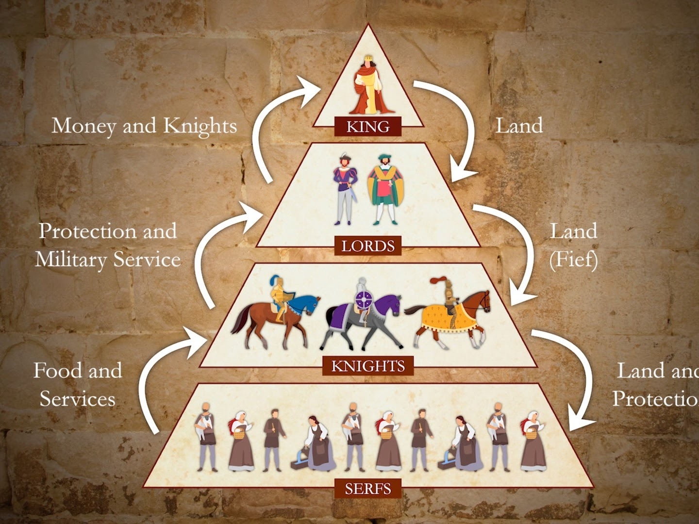

MIC-4 History
| Not started |
13वीं शताब्दी से 1789 तक यूरोप का इतिहास
इकाई-1: आधुनिक यूरोप की शुरुआत (Beginning of Modern Europe)
📘 इकाई प्रस्तावना (Unit Introduction)
विद्यार्थियों के लिए विशेष मार्गदर्शन:
मध्यकालीन यूरोप की रूढ़िवादी दुनिया से निकलकर आधुनिक यूरोप की ओर कदम बढ़ाना इतिहास की सबसे रोमांचक घटनाओं में से एक है। इकाई-1 इसी ऐतिहासिक बदलाव की कहानी बताती है।
13वीं से 16वीं शताब्दी के दौरान यूरोप में एक ऐसा सामाजिक, आर्थिक और सांस्कृतिक परिवर्तन हुआ जिसने पूरी दुनिया की दिशा बदल दी। इस इकाई में आप समझेंगे कि:
- पुराना ढांचा कैसे टूटा: सदियों से चले आ रहे बंद सामंती ढांचे (Feudalism) का अंत कैसे हुआ और किसानों को मुक्ति कैसे मिली।
- सोच और विचार कैसे बदले: 'पुनर्जागरण' (Renaissance) के माध्यम से मानव जीवन में तर्क, विज्ञान, कला और नए विचारों की वापसी कैसे हुई।
- कला और साहित्य का नया युग: माइकलएंजेलो, लियोनार्डो दा विंची, और शेक्सपियर जैसे महान विचारकों ने समाज को किस प्रकार नई दिशा दी।
यह इकाई आपको यह समझने में मदद करेगी कि मध्यकालीन अंधकार युग से निकलकर यूरोप किस प्रकार 'आधुनिक युग' में प्रवेश कर सका।
{kind=link}

1.1 सामंतवाद का पतन (Decline of Feudalism)
सामंतवाद क्या था? (What was Feudalism?)
मध्यकाल में यूरोप में कोई केंद्रीय मजबूत राजा या सरकार नहीं थी। संपूर्ण समाज भूमि व्यवस्था पर आधारित एक सीढ़ीनुमा (Pyramid Structure) प्रणाली में बंटा हुआ था:
- सबसे ऊपर: राजा (King)
- दूसरे स्थान पर: सामंत / लॉर्ड्स (Lords/Nobles)
- तीसरे स्थान पर: नाइट / सैनिक (Knights)
- सबसे नीचे: भू-दास या किसान (Serfs/Peasants) - जो रात-दिन जमीन पर मेहनत करते थे और सामंतों के अधीन रहते थे।
13वीं से 15वीं शताब्दी के बीच इस सामंती व्यवस्था की नींव हिलने लगी और इसका पतन हो गया।
1.1.1 पतन के कारण और इसके परिणाम (Causes and Consequences)

I. सामंतवाद के पतन के मुख्य कारण (Causes)
सामंतवाद का पतन किसी एक घटना से नहीं हुआ, बल्कि कई राजनीतिक, आर्थिक, सामाजिक और तकनीकी कारणों का परिणाम था:
1. धर्मयुद्ध (Crusades)
- 11वीं से 13वीं शताब्दी के दौरान ईसाई और मुस्लिम दुनिया के बीच यरुशलम पर अधिकार को लेकर धर्मयुद्ध (Crusades) लड़े गए।
- इन युद्धों में भाग लेने के लिए कई यूरोपीय सामंतों ने अपनी संपत्तियां और जमीनें बेच दीं या गिरवी रख दीं।
- युद्ध में बड़ी संख्या में सामंत मारे गए। जो लौटकर आए, उनका आर्थिक ढांचा टूट चुका था।

2. ब्लैंक डेथ / काली मौत की महामारी (Black Death - 1347–1351)
- 14वीं शताब्दी के मध्य में यूरोप में भयानक 'प्लेग' महामारी फैली, जिसे ब्लैक डेथ कहा गया।
- इसने यूरोप की लगभग एक-तिहाई आबादी को खत्म कर दिया।
- प्रभाव: मजदूरों और किसानों की भारी कमी हो गई। अब बचे हुए किसानों ने सामंतों से अधिक मजदूरी और स्वतंत्रता की मांग की। सामंत अब किसानों का मनमाना शोषण करने की स्थिति में नहीं रहे।
3. व्यापार, मुद्रा और नए नगरों का विकास (Rise of Trade & Money Economy)
- मध्यकाल के अंत में नए व्यापारिक मार्गों की खोज हुई और शहरों (जैसे वेनिस, फ्लोरेंस) का तेजी से विकास हुआ।
- पहले लेन-देन का मुख्य माध्यम 'जमीन' या 'वस्तु-विनिमय' (Barter) था, लेकिन अब नकद मुद्रा (Money System) का चलन बढ़ा।
- किसान अपनी उपज शहर में बेचकर नकद पैसा कमाने लगे और सामंतों को नकद कर देकर भू-दासता (Serfdom) से मुक्त होने लगे।
4. सैन्यवाद में बदलाव और बारूद का प्रयोग (Use of Gunpowder & Cannon)
- 14वीं शताब्दी में यूरोप में बारूद (Gunpowder) और तोपों का इस्तेमाल शुरू हुआ।
- सामंतों के बड़े-बड़े पत्थर के किले जो पहले अभेद्य समझे जाते थे, अब तोपों के सामने टिक नहीं सकते थे।
- राजाओं ने अपनी स्थायी भाड़े की सेनाएं रखनी शुरू कर दीं, जिससे वे अब सामंतों के घुड़सवारों (Knights) पर निर्भर नहीं रहे।
5. कृषक विद्रोह (Peasant Revolts)
- अत्यधिक करों और शोषण के खिलाफ किसानों ने एकजुट होकर हिंसक विद्रोह किए:
- इंग्लैंड का कृषक विद्रोह (1381 - Wat Tyler's Rebellion)
- फ्रांस का जाकेरी विद्रोह (1358 - Jacquerie)
- इन विद्रोहों ने सामंतों के डर और दबदबे को पूरी तरह खत्म कर दिया।
6. शक्तिशाली केंद्रीय राजतंत्रों का उदय (Rise of Strong Kings)
- इंग्लैंड और फ्रांस जैसे देशों में राजाओं ने व्यापारियों और उभरते मध्यम वर्ग का समर्थन प्राप्त किया।
- राजाओं ने अपनी शक्ति बढ़ाई और सामंतों की निजी अदालतों व कर वसूली के अधिकारों को छीन लिया।
II. सामंतवाद के पतन के परिणाम (Consequences)
सामंतवाद के पतन से यूरोप का पूरा ढांचा बदल गया:
┌─────────────────────────────────────────────────────────┐
│ सामंतवाद के पतन के परिणाम │
├───────────────────┬─────────────────┬───────────────────┤
│ राजनीतिक परिणाम │ आर्थिक परिणाम │ सामाजिक परिणाम │
├───────────────────┼─────────────────┼───────────────────┤
│ • शक्तिशाली राजा │ • मुद्रा अर्थव्यवस्था│ • भू-दासता का अंत │
│ • केंद्रीय सरकार │ • शहरों का विकास│ • मध्यम वर्ग उदय │
│ • राष्ट्र-राज्य │ • पूंजीवाद की नींव│ • सामाजिक गतिशीलता│
└───────────────────┴─────────────────┴───────────────────┘
1. राजनीतिक परिणाम (Political Consequences)
- निरंकुश और शक्तिशाली राजतंत्र: सामंतों की शक्ति खत्म होने से राजा सर्वोच्च शक्ति बन गए।
- राष्ट्रीय चेतना का उदय: छोटे-छोटे सामंती क्षेत्रों के बजाय एकजुट राष्ट्रीय राज्यों (National States) जैसे इंग्लैंड, फ्रांस और स्पेन का निर्माण हुआ।
2. आर्थिक परिणाम (Economic Consequences)
- पूंजीवादी व्यवस्था की नींव: कृषि आधारित बंद अर्थव्यवस्था का स्थान व्यापारिक और नगर-आधारित बाजार अर्थव्यवस्था (Commercial Economy) ने ले लिया।
- बैंकों और व्यापारिक निगमों का उदय: लेन-देन में सिक्के और बैंकिंग प्रणाली मुख्य माध्यम बन गए।
3. सामाजिक परिणाम (Social Consequences)
- भू-दासता (Serfdom) का अंत: किसान अब जमीन से बंधे हुए गुलाम नहीं रहे, वे स्वतंत्र नागरिक बन गए।
- मध्यम वर्ग (Bourgeoisie) का उदय: व्यापारी, वकील, डॉक्टर और शिल्पकारों का एक नया 'मध्यम वर्ग' सामने आया, जिसने आगे चलकर यूरोपीय राजनीति और संस्कृति में प्रमुख भूमिका निभाई।
📌 संक्षेप में सार (Quick Summary Table)
| मुख्य पहलू | सामंतवाद के दौरान (मध्यकाल) | सामंतवाद के पतन के बाद (आधुनिक काल की शुरुआत) |
|---|---|---|
| सत्ता का केंद्र | बिखरे हुए सामंत और लॉर्ड्स | शक्तिशाली राजा और केंद्रीय सरकार |
| आर्थिक आधार | केवल कृषि और जमीन | व्यापार, उद्योग और मुद्रा (पैसा) |
| किसानों की स्थिति | भू-दास (जमीन से बंधे गुलाम) | स्वतंत्र किसान और मजदूरी करने वाले |
| सैनिक व्यवस्था | सामंतों के नाइट (Knights) | राजा की स्थायी राष्ट्रीय सेना |
| प्रमुख सामाजिक वर्ग | केवल राजा, सामंत और किसान | राजा, व्यापारी/मध्यम वर्ग और स्वतंत्र नागरिक |
1.2 पुनर्जागरण (Renaissance)
📘 उप-विषय प्रस्तावना (Sub-topic Introduction)
'पुनर्जागरण' का शाब्दिक अर्थ है "फिर से जागना" या "पुनर्जन्म" (Rebirth)। 14वीं से 16वीं शताब्दी के बीच यूरोप में एक ऐसा सांस्कृतिक, बौद्धिक और सामाजिक आंदोलन हुआ जिसने मध्यकालीन अंधविश्वासों और चर्च के कठोर नियमों को तोड़कर तर्क, विज्ञान और मानववाद (Humanism) को जन्म दिया।
यह केवल इतिहास की एक घटना नहीं थी, बल्कि मानव सोच का एक नया दौर था, जहाँ धर्म की जगह मनुष्य और उसकी बौद्धिक क्षमता चिंतन के केंद्र में आ गए।
1.2.1 पुनर्जागरण के उदय के कारण और इसके विभिन्न चरण (Causes and Phases of Renaissance)

I. पुनर्जागरण के उदय के मुख्य कारण (Causes of the Renaissance)
पुनर्जागरण का उदय किसी एक दिन में नहीं हुआ, बल्कि इसके पीछे कई महत्वपूर्ण ऐतिहासिक और बौद्धिक कारण काम कर रहे थे:
┌─────────────────────────────────────────┐
│ पुनर्जागरण के उदय के कारण │
└────────────────────┬────────────────────┘
│
┌─────────────────┬─────────────────┼─────────────────────┬─────────────────┐
│ │ │ │ │
कुस्तुंतुनिया का छापेखाने का मानववाद की व्यापारिक समृद्धि धर्मयुद्ध के
पतन (1453) आविष्कार अवधारणा और नगरों का विकास दुष्प्रभाव1. कुस्तुंतुनिया का पतन (Fall of Constantinople - 1453)
- 1453 में तुर्कों (Ottoman Turks) ने पूर्वी रोमन साम्राज्य की राजधानी कुस्तुंतुनिया (Constantinople) पर अधिकार कर लिया।
- वहाँ रहने वाले ग्रीक और रोमन विद्वान अपनी प्राचीन पांडुलिपियों (Manuscripts), ज्ञान और विचार लेकर इटली के शहरों (जैसे रोम, वेनिस, फ्लोरेंस) में शरण लेने पहुंचे।
- इन विद्वानों के आगमन से यूरोपवासियों को यूनानी और रोमन दर्शन, कला तथा साहित्य का पुनर्ज्ञान हुआ।
2. छापेखाने (Printing Press) का आविष्कार
- 15वीं शताब्दी के मध्य में जर्मनी के जोहान्स गुटेनबर्ग (Johannes Gutenberg) ने आधुनिक प्रिंटिंग प्रेस का आविष्कार किया।
- इससे पुस्तकें सस्ती हुईं और बड़ी संख्या में छपने लगीं।
- ज्ञान अब केवल चर्च और राजाओं तक सीमित नहीं रहा, बल्कि आम जनता और छात्रों तक आसानी से पहुँचने लगा, जिससे नए विचारों का तीव्र प्रसार हुआ।
3. धर्मयुद्ध (Crusades) और भौगोलिक संपर्क
- ईसाई और मुस्लिम दुनिया के बीच हुए धर्मयुद्धों के कारण यूरोपीय लोग पूर्व (Arab & Middle East) की समृद्ध संस्कृति, विज्ञान, गणित और दर्शन के संपर्क में आए।
- अरब जगत ने यूनानी ज्ञान को सहेज कर रखा था; यूरोपवासियों ने अरबों से यह ज्ञान पुनः सीखा।
4. व्यापारिक समृद्धि और समृद्ध मध्यम वर्ग (Merchant Class & Patronage)
- इटली के शहर (जैसे फ्लोरेंस, वेनिस) भूमध्यसागरीय व्यापार के मुख्य केंद्र बन गए।
- यहाँ 'मेदिची' (Medici) परिवार जैसे बेहद अमीर व्यापारी घराने उभरे। इन समृद्ध व्यापारियों और उद्योगपतियों ने कवियों, दार्शनिकों, चित्रकारों और वास्तुकारों को आर्थिक संरक्षण दिया।
5. मानववाद का विकास (Development of Humanism)
- मध्यकाल में चर्च सिखाता था कि यह जीवन केवल कष्ट सहने और परलोक सुधारने के लिए है।
- पुनर्जागरण ने 'मानववाद' (Humanism) का संदेश दिया—अर्थात "मनुष्य ही सभी चीजों का मापदंड है"।
- पेट्रार्क (Petrarch) को 'मानववाद का पिता' कहा जाता है। उन्होंने इस बात पर जोर दिया कि इस पृथ्वी पर मनुष्य का जीवन, उसका सुख और उसका विकास सबसे महत्वपूर्ण है।

II. पुनर्जागरण के विभिन्न चरण (Phases of the Renaissance)
पुनर्जागरण एक क्रमिक प्रक्रिया थी जो लगभग तीन शताब्दियों तक अलग-अलग चरणों से होकर गुजरी:

चरण 1: प्रारंभिक चरण / बौद्धिक पुनर्जागरण (14वीं शताब्दी - इटली)
- केंद्र: इटली (मुख्यतः फ्लोरेंस शहर)।
- मुख्य विशेषता: साहित्य और चिंतन में प्राचीन ग्रीक व लैटिन भाषा के अध्ययनों की पुनरावृत्ति।
- प्रमुख व्यक्तित्व:
- पेट्रार्क (Petrarch): मानववाद की नींव रखी।
- दांते (Dante): 'डिवाइन कॉमेडी' (Divine Comedy) पुस्तक लिखी, जो आम बोलचाल की भाषा (इटैलियन) में थी, लैटिन में नहीं।
चरण 2: उच्च पुनर्जागरण / कलात्मक स्वर्ण काल (15वीं से 16वीं शताब्दी की शुरुआत)
- केंद्र: रोम और फ्लोरेंस।
- मुख्य विशेषता: यह पुनर्जागरण का सबसे समृद्ध चरण था। कला, मूर्तिकला और वास्तुकला अपने उच्चतम शिखर पर पहुँची।
- प्रमुख व्यक्तित्व:
- लियोनार्डो दा विंची (Leonardo da Vinci): 'मोनालिसा' और 'द लास्ट सफर' के चित्रकार।
- माइकलएंजेलो (Michelangelo): सिस्टाइन चैपल की छत के प्रसिद्ध भित्तिचित्र और 'डेविड' की मूर्ति के मूर्तिकार।
- राफेल (Raphael): 'द स्कूल ऑफ एथेंस' के चित्रकार।
चरण 3: उत्तरी पुनर्जागरण / प्रसार का चरण (16वीं शताब्दी)
- केंद्र: फ्रांस, इंग्लैंड, जर्मनी, हॉलैंड और स्पेन (इटली के बाहर पूरे यूरोप में प्रसार)।
- मुख्य विशेषता: इसमें केवल कला ही नहीं, बल्कि सामाजिक और धार्मिक सुधारों पर भी बल दिया गया।
- प्रमुख व्यक्तित्व:
- इरास्मस (Erasmus - हॉलैंड): 'इन प्रेज ऑफ फॉली' लिखी; चर्च के पाखंड पर चोट की।
- विलियम शेक्सपियर (William Shakespeare - इंग्लैंड): महान नाटककार (मैकबेथ, हैमलेट)।
- सर थॉमस मोर (Sir Thomas More - इंग्लैंड): 'यूटोपिया' (Utopia) की रचना की।
चरण 4: अंतिम चरण / वैज्ञानिक पुनर्जागरण (16वीं का उत्तरार्ध से 17वीं शताब्दी)
- केंद्र: संपूर्ण यूरोप।
- मुख्य विशेषता: तर्क और अवलोकन पर आधारित वैज्ञानिक सोच का उदय। इसने धार्मिक मान्यताओं को चुनौती दी।
- प्रमुख व्यक्तित्व:
- कोपरनिकस (Copernicus) & गैलीलियो (Galileo): सिद्ध किया कि सूर्य ब्रह्मांड के केंद्र में है, पृथ्वी नहीं।
📌 संक्षेप में सार (Quick Summary Table)
| पहलू | मध्यकाल (Before Renaissance) | पुनर्जागरण काल (After Renaissance) |
|---|---|---|
| केंद्र बिंदु | धर्म और ईश्वर (God-centered) | मनुष्य और समाज (Human-centered) |
| सोच का आधार | अंधविश्वास और परंपरा | तर्क, प्रश्न पूछना और परीक्षण (Logic & Science) |
| भाषा | केवल कठिन लैटिन भाषा (चर्च की भाषा) | स्थानीय लोक भाषाएँ (इटैलियन, अंग्रेजी, फ्रेंच) |
| कला का रूप | निर्जीव और केवल धार्मिक चित्र | यथार्थवादी, जीवंत और मानवीय भावनाओं से पूर्ण |
| ज्ञान का प्रसार | हाथों से लिखी कम पांडुलिपियाँ | प्रिंटिंग प्रेस द्वारा व्यापक पुस्तक प्रसार |
1.2.2 कला, वास्तुकला और साहित्य का विकास (Development of Art, Architecture and Literature)
📘 उप-विषय प्रस्तावना (Sub-topic Introduction)
पुनर्जागरण का सबसे सुंदर और प्रत्यक्ष प्रभाव कला, वास्तुकला (Architecture) और साहित्य के क्षेत्र में देखा गया।
मध्यकाल में जहाँ कला और साहित्य का एकमात्र उद्देश्य 'धर्म और ईश्वर' का प्रचार करना था, वहीं पुनर्जागरण काल में कला और साहित्य 'मानव केंद्रित' (Human-centered) हो गए। इसमें प्राकृतिक सुंदरता, मानवीय संवेदनाओं, शरीर की वास्तविक बनावट और वैज्ञानिक तकनीकों का समावेश किया गया।
I. चित्रकला और मूर्तिकला का विकास (Development of Art & Sculpture)
पुनर्जागरण कालीन चित्रकला में दो बड़ी वैज्ञानिक तकनीकों की खोज हुई:
- परिप्रेक्ष्य / पर्सपेक्टिव (Perspective): चित्रों में गहराई (3D प्रभाव) दिखाना।
- सफूमातो (Sfumato) व यथार्थवाद: छाया और प्रकाश (Light & Shadow) के माध्यम से चित्रों को एकदम जीवंत और असली बनाना।

पुनर्जागरण के तीन महान कलाकार (The Great Renaissance Masters)
┌─────────────────────────────────────────────────────────┐
│ पुनर्जागरण के महान चित्रकार │
├───────────────────┬─────────────────┬───────────────────┤
│ लियोनार्डो दा विंची │ माइकलएंजेलो │ राफेल │
├───────────────────┼─────────────────┼───────────────────┤
│ • मोनालिसा │ • सिस्टाइन चैपल │ • द स्कूल ऑफ │
│ • द लास्ट सफर │ • डेविड की मूर्ति │ एथेंस │
└───────────────────┴─────────────────┴───────────────────┘1. लियोनार्डो दा विंची (Leonardo da Vinci) - बहुमुखी प्रतिभा के धनी
- वे केवल चित्रकार नहीं, बल्कि वैज्ञानिक, इंजीनियर और शरीर-शास्त्री (Anatomist) भी थे।
- प्रमुख कृतियाँ:
- मोनालिसा (Mona Lisa): अपनी रहस्यमयी मुस्कान और प्रकाश-छाया के बेजोड़ संयोजन के लिए विश्व प्रसिद्ध।
- द लास्ट सफर (The Last Supper): ईसा मसीह के अंतिम भोजन का सजीव और भावनात्मक चित्रण।

2. माइकलएंजेलो (Michelangelo) - महान मूर्तिकार व चित्रकार
- उन्होंने मूर्तिकला में मानव शरीर की शारीरिक बुनावट (Anatomy) को बेहद बारीकी से उकेरा।
- प्रमुख कृतियाँ:
- डेविड (David) की संगमरमर की मूर्ति: निडरता और मानवीय गरिमा का प्रतीक।
- पिएटा (Pieta): माता मरियम की गोद में मृत ईसा मसीह की मूर्ति।
- सिस्टाइन चैपल की छत (Sistine Chapel Ceiling): रोम के चर्च की छत पर 'सृष्टि की उत्पत्ति' (The Creation of Adam) का अमर चित्र।
3. राफेल (Raphael)
- उन्होंने चित्रों में सौम्यता और सामंजस्य (Harmony) को प्रस्तुत किया।
- प्रमुख कृति: 'द स्कूल ऑफ एथेंस' (The School of Athens), जिसमें प्राचीन यूनान के महान दार्शनिकों (सुकरात, प्लेटो, अरस्तू) को एक साथ विचार-विमर्श करते दिखाया गया है।
II. वास्तुकला का विकास (Development of Architecture)
मध्यकालीन यूरोप में 'गोथिक शैली' (Gothic Style) प्रचलित थी, जिसमें ऊंचे-नकीले मेहराब और उदास इमारतें बनती थीं। पुनर्जागरण काल में इसे बदलकर 'क्लासिकल शैली' (Classical Style) अपनाई गई, जो प्राचीन यूनानी और रोमन वास्तुकला पर आधारित थी।

वास्तुकला की मुख्य विशेषताएँ:
- गोलाकार गुंबद (Domes) और गोल मेहराब (Rounded Arches)
- रोमन स्तंभ (Pillars/Columns)
- संतुलन और सममिति (Symmetry & Proportion)
प्रमुख वास्तुकार और निर्माण:
- ब्रूनेलेस्की (Brunelleschi): उन्होंने फ्लोरेंस कैथेड्रल के विशाल गुंबद (Duomo of Florence) का निर्माण किया, जो वास्तुकला का अद्भुत नमूना है।
- माइकलएंजेलो: रोम में सेंट पीटर्स बेसिलिका (St. Peter's Basilica) के विशाल गुंबद का डिजाइन तैयार किया।
III. साहित्य का विकास (Development of Literature)
पुनर्जागरण काल में साहित्य के क्षेत्र में एक क्रांति आई।
1. लोक भाषाओं (Vernacular Languages) का प्रयोग
- मध्यकाल में सभी धार्मिक और गंभीर पुस्तकें कठिन लैटिन भाषा में लिखी जाती थीं, जिसे आम जनता नहीं समझ सकती थी।
- पुनर्जागरण के साहित्यकारों ने आम बोलचाल की भाषाओं जैसे इटैलियन, अंग्रेजी, फ्रेंच और स्पेनिश में लिखना शुरू किया।

प्रमुख साहित्यकार और उनकी रचनाएँ:
(A) इटैलियन साहित्य
- दांते (Dante Alighieri): 'डिवाइन कॉमेडी' (Divine Comedy) लिखी। यह लैटिन के बजाय इटैलियन भाषा में लिखी गई पहली बड़ी कृति थी।
- पेट्रार्क (Petrarch): अपनी प्रेम कविताओं और गीतों (Sonnets) के माध्यम से मानववाद की नींव रखी।
- बोकाचियो (Boccaccio): 'डेकामेरोन' (Decameron) नामक १०० कहानियों का संग्रह लिखा, जिसमें मानवीय स्वभाव का यथार्थ चित्रण था।
- निकोलो मैकियावेली (Niccolo Machiavelli):
- उन्होंने 'द प्रिंस' (The Prince) नामक प्रसिद्ध राजनीतिक पुस्तक लिखी।
- उन्हें "आधुनिक राजनीति विज्ञान का पिता" कहा जाता है। उन्होंने राजनीति को धर्म और नैतिकता से अलग कर व्यावहारिक दृष्टिकोण दिया।
(B) अंग्रेजी व अन्य यूरोपीय साहित्य
- विलियम शेक्सपियर (William Shakespeare - इंग्लैंड): दुनिया के सबसे महान नाटककार। उनके नाटकों ('मैकबेथ', 'हैमलेट', 'रोमियो-जूलियट') में मानव मन के द्वंद्व और भावनाओं का गहरा चित्रण है।
- इरास्मस (Erasmus - हॉलैंड): 'इन प्रेज ऑफ फॉली' (In Praise of Folly) लिखी, जिसमें चर्च के भ्रष्टाचार और पाखंड पर व्यंग्य किया गया।
- सर्वेंटिस (Cervantes - स्पेन): 'डॉन क्विकजोट' (Don Quixote) लिखा, जो सामंती शूरवीरता का मज़ाक उड़ाने वाला पहला आधुनिक उपन्यास माना जाता है।
📌 संक्षेप में सार (Quick Summary Table)
| क्षेत्र | मध्यकालीन स्थिति | पुनर्जागरण काल की स्थिति |
|---|---|---|
| चित्रकला | सपाट (2D), केवल धार्मिक, निर्जीव चेहरा | 3D गहराई (Perspective), प्रकाश-छाया, यथार्थवादी |
| वास्तुकला | गॉथिक शैली (नुकीले मेहराब, अंधेरे चर्च) | क्लासिकल शैली (विशाल गुंबद, स्तंभ, गोल मेहराब) |
| साहित्य की भाषा | केवल लैटिन (चर्च की भाषा) | आम बोलचाल की भाषाएँ (इटैलियन, अंग्रेजी, आदि) |
| मुख्य विषय | ईश्वर, मोक्ष और परलोक | मनुष्य, प्रकृति, प्रेम और व्यावहारिक राजनीति |
1.2.3 पुनर्जागरण पर नया विमर्श (New Discourse on Renaissance)
📘 उप-विषय प्रस्तावना (Sub-topic Introduction)
परंपरागत रूप से (19वीं शताब्दी में) इतिहासकार पुनर्जागरण को एक ऐसी घटना मानते थे जिसने अचानक यूरोप को मध्यकालीन अंधकार से निकालकर आधुनिक युग के उजाले में खड़ा कर दिया। लेकिन 20वीं और 21वीं शताब्दी के आधुनिक इतिहासविदों ने इस पुरानी अवधारणा को चुनौती दी है।
इसे ही इतिहास में "पुनर्जागरण पर नया विमर्श" (New Discourse / Debates on Renaissance) कहा जाता है। इसमें इतिहासकार इस बात पर बहस करते हैं कि:
- क्या पुनर्जागरण सचमुच एक अचानक आई क्रांति थी या यह मध्यकाल का ही एक क्रमिक विस्तार था?
- क्या इसका लाभ केवल अमीर पुरुषों तक सीमित था, या आम जनता और महिलाओं को भी इससे कोई फायदा हुआ?
I. पारंपरिक दृष्टिकोण बनाम आधुनिक दृष्टिकोण (Traditional vs. Modern Viewpoint)

1. पारंपरिक दृष्टिकोण: जाकब बर्कहार्ट (Jacob Burckhardt - 1860)
19वीं शताब्दी के स्विट्जरलैंड के इतिहासकार जाकब बर्कहार्ट ने अपनी पुस्तक "द सिविलाइजेशन ऑफ द रेनेसां इन इटली" (1860) में पुनर्जागरण का पारंपरिक सिद्धांत दिया:
- मुख्य विचार: बर्कहार्ट के अनुसार, पुनर्जागरण ने मध्यकाल के अंधकार को समाप्त कर "आधुनिक दुनिया की खोज" और "व्यक्तिवाद" (Individualism) का जन्म दिया।
- उन्होंने मध्यकाल को पूरी तरह जड़, अंधविश्वासी और पिछड़ा माना तथा पुनर्जागरण को एक अचानक हुई महान क्रांति बताया।
2. आधुनिक विचारकों द्वारा बर्कहार्ट की आलोचना (The Revisionist Debate)
20वीं शताब्दी के इतिहासकारों (जैसे- सी.एच. हासकिन्स, पीटर बर्क, और ई.पी. पैनोफस्की) ने बर्कहार्ट के इस सिद्धांत को अतिशयोक्ति (Exaggeration) माना। उनका तर्क है:
- निरंतरता का सिद्धांत (Continuity Thesis): इतिहास में कोई भी बड़ा बदलाव रातों-रात नहीं होता। पुनर्जागरण मध्यकाल से पूरी तरह कटा हुआ नहीं था, बल्कि मध्यकालीन जड़ों से ही धीरे-धीरे विकसित हुआ था।
- 12वीं शताब्दी का पुनर्जागरण (12th Century Renaissance): इतिहासकार चार्ल्स होमर हासकिन्स (C.H. Haskins) ने साबित किया कि 12वीं शताब्दी में ही यूरोप में विश्वविद्यालयों (जैसे पेरिस, बोलोन्या) की स्थापना हो चुकी थी और यूनानी ज्ञान-विज्ञान का अनुवाद शुरू हो चुका था।
II. नए विमर्श के मुख्य बिंदु (Key Themes of the New Discourse)

1. सीमित सामाजिक दायरा (Elite Class Phenomenon)
- नए इतिहासविदों का मानना है कि पुनर्जागरण का प्रभाव पूरे समाज पर एक समान नहीं पड़ा।
- पेंटिंग्स, महंगी पांडुलिपियां, और वास्तुकला का आनंद केवल राजा, अमीर व्यापारी और चर्च के उच्च अधिकारी ही उठा सकते थे।
- यूरोप के आम किसानों और मजदूरों के दैनिक जीवन और गरीबी में पुनर्जागरण से कोई खास बदलाव नहीं आया।
2. महिला इतिहास का दृष्टिकोण (Gender Perspective)
- प्रसिद्ध नारीवादी इतिहासकार जोन केली (Joan Kelly) ने 1977 में एक ऐतिहासिक लेख लिखा: "क्या महिलाओं का भी पुनर्जागरण हुआ था?" (Did Women Have a Renaissance?)।
- निष्कर्ष: उन्होंने तर्क दिया कि जहाँ पुरुषों को इस काल में नई स्वतंत्रता और अवसर मिले, वहीं महिलाओं की सामाजिक और राजनीतिक स्वतंत्रता मध्यकाल की तुलना में और सीमित हो गई। उन्हें केवल घर और कलात्मक वस्तुओं तक ही सीमित रखा गया।
3. वैश्विक दृष्टिकोण (Global Context)
- पुराने इतिहासकार इसे पूरी तरह 'यूरोपीय चमत्कार' मानते थे।
- नया विमर्श यह स्पष्ट करता है कि पुनर्जागरण संभव ही नहीं होता यदि इस्लामी/अरब जगत (जैसे इब्न सिना, इब्न रुश्द) ने प्राचीन यूनानी पांडुलिपियों को सहेज कर उनका अनुवाद न किया होता।
- इसके अलावा, चीन से आई कागज, प्रिंटिंग और बारूद की तकनीक ने भी पुनर्जागरण की नींव रखी।
📌 संक्षेप में सार (Quick Summary Table)
| विषय | पारंपरिक विमर्श (बर्कहार्ट का मत) | नया आधुनिक विमर्श (Revisionist View) |
|---|---|---|
| प्रकृति | अचानक हुई महान क्रांति | क्रमिक और निरंतर विकास प्रक्रिया (Evolution) |
| मध्यकाल से संबंध | मध्यकाल के अंधकार से पूरी तरह मुक्ति | मध्यकालीन चिंतन और विश्वविद्यालयों से गहरा जुड़ाव |
| सामाजिक प्रभाव | पूरे यूरोपीय समाज का विकास | मुख्यतः अमीर और शिक्षित वर्ग (Elite) तक सीमित |
| महिलाओं की स्थिति | इस पहलू पर ध्यान नहीं दिया गया | महिलाओं की सामाजिक स्वतंत्रता में कमी आई (जोन केली) |
| स्रोत | केवल यूरोपीय प्रतिभा का परिणाम | अरब, चीनी और एशियाई ज्ञान-तकनीक का गहरा प्रभाव |
इकाई-2: यूरोप में निरंकुशता (Absolutism in Europe)
📘 इकाई प्रस्तावना (Unit Introduction)
विद्यार्थियों के लिए विशेष मार्गदर्शन:
सामंतवाद के पतन के बाद यूरोप में शक्ति का नया केंद्र राजा (Monarchy) बना। 16वीं से 18वीं शताब्दी के दौरान यूरोप में एक विशेष शासन प्रणाली का विकास हुआ, जिसे "निरंकुश राजतंत्र" (Absolute Monarchy / Absolutism) कहा जाता है।
निरंकुशता (Absolutism) का अर्थ क्या है?
निरंकुश शासन का तात्पर्य एक ऐसी व्यवस्था से है जहाँ राज्य की संपूर्ण शक्ति (कानून बनाना, कर लगाना, न्याय करना और सेना का संचालन) केवल एक ही व्यक्ति यानी राजा के हाथ में केंद्रित होती है। राजा पर किसी संसद, संविधान या संस्था का कोई नियंत्रण नहीं होता। इस दौर में राजाओं ने "राजत्व का दैवीय सिद्धांत" (Divine Right Theory of Kingship) अपनाया, जिसके अनुसार राजा को ईश्वर का प्रतिनिधि माना जाता था और उसकी आज्ञा का पालन करना हर नागरिक का धार्मिक कर्तव्य था।
इस इकाई में आप समझेंगे कि:
- स्पेन और फ्रांस में निरंकुश राजतंत्र का गठन और विकास कैसे हुआ।
- ब्रिटेन में राजाओं ने जब निरंकुश बनने की कोशिश की, तो संसद के साथ उनका ऐतिहासिक संघर्ष कैसे हुआ और लोकतांत्रिक मूल्यों की नींव कैसे पड़ी।

2.1 निरंकुश राजतंत्र का विकास (Growth of Absolute Monarchy)
2.1.1 स्पेन और फ्रांस में राजतंत्र का उदय (Growth in Spain and France)
16वीं और 17वीं शताब्दी के दौरान स्पेन और फ्रांस यूरोप की दो सबसे बड़ी और शक्तिशाली निरंकुश ताकतें बनकर उभरे।
I. स्पेन में निरंकुश राजतंत्र का उदय (Rise of Absolutism in Spain)
15वीं शताब्दी के अंत तक स्पेन छोटे-छोटे राज्यों में बंटा हुआ था। स्पेन में निरंकुश राजतंत्र का उदय दो प्रमुख चरणों में हुआ:
┌─────────────────────────────────────────────────────────┐
│ स्पेन में निरंकुशता का विकास │
├────────────────────────────┬────────────────────────────┤
│ फ़र्डिनेंड और इसाबेला │ सम्राट चार्ल्स पंचम व │
│ (स्पेन का एकीकरण) │ फिलिप द्वितीय (चरम सीमा) │
└────────────────────────────┴────────────────────────────┘1. स्पेन का राजनीतिक एकीकरण (Ferdinand and Isabella)
- विवाह द्वारा एकीकरण (1469): अरागन के राजकुमार फ़र्डिनेंड (Ferdinand) और कैस्टिल की राजकुमारी इसाबेला (Isabella) के विवाह ने स्पेन के दो सबसे बड़े राज्यों को एक कर दिया।
- सामंतों का दमन: उन्होंने शक्तिशाली सामंतों की निजी सेनाओं को भंग कर दिया और राजा के अधीन एक मजबूत प्रशासनिक ढांचा तैयार किया।
- कैथोलिक धर्म और इंक्विजिशन (Inquisition): स्पेन को एक धर्मनिरपेक्ष राज्य के बजाय कट्टर कैथोलिक राज्य बनाया गया। धार्मिक अदालतों (Inquisition) के माध्यम से विरोधियों और गैर-कैथोलिकों का दमन किया गया, जिससे राजा की सत्ता बेहद मजबूत हो गई।
2. स्पेनिश साम्राज्य का स्वर्ण युग: चार्ल्स पंचम और फिलिप द्वितीय
- चार्ल्स पंचम (Charles V, 1516–1556): स्पेन के साथ-साथ वे पवित्र रोमन साम्राज्य के भी सम्राट बने। अमरीकी महाद्वीप (पेरू, मेक्सिको) से आने वाले विशाल सोने-चांदी के खजाने ने स्पेनिश राजतंत्र को अत्यधिक आर्थिक शक्ति प्रदान की।
- फिलिप द्वितीय (Philip II, 1556–1598): स्पेनिश निरंकुशता अपने चरम पर पहुँच गई।
- फिलिप द्वितीय स्वयं को ईश्वर का चुना हुआ शासक मानता था और दिन में 12-14 घंटे काम करके साम्राज्य के छोटे से छोटे निर्णय खुद लेता था।
- उसने मैड्रिड को अपनी विशाल राजधानी बनाया और एक शक्तिशाली नौसेना (स्पेनिश आर्मडा / Spanish Armada) का गठन किया।

II. फ्रांस में निरंकुश राजतंत्र का उदय (Rise of Absolutism in France)
फ्रांस में निरंकुशता का विकास स्पेन से भी अधिक सुव्यवस्थित और प्रभावशाली रहा। यह यूरोपीय निरंकुशता का सबसे बेहतरीन उदाहरण बना।

1. हेनरी चतुर्थ (Henry IV, 1589–1610): न्यू बर्बोन वंश की स्थापना
- फ्रांस में धार्मिक गृहयुद्धों (कैथोलिक बनाम ह्यूजेनॉट/प्रोटेस्टेंट) के बाद हेनरी चतुर्थ राजा बना।
- उसने 'नंत का फरमान' (Edict of Nantes - 1598) जारी कर धार्मिक शांति स्थापित की और फ्रांस की जर्जर आर्थिक स्थिति को सुधारा।
2. कार्डिनल ऋशेलू का योगदान (Cardinal Richelieu - 1624–1642)
फ्रांस के राजा लुई तेरहवें के प्रधानमंत्री कार्डिनल ऋशेलू को फ्रांसीसी निरंकुशता का वास्तविक निर्माता माना जाता है। उन्होंने दो बड़े कदम उठाए:
- सामंतों की शक्ति नष्ट करना: उन्होंने सामंतों के किलों को तुड़वा दिया और उनकी राजनीतिक शक्ति छीन ली।
- इंटेन्डेंट्स प्रणाली (Intendants System): पूरे फ्रांस में कर वसूलने और कानून व्यवस्था बनाए रखने के लिए राजा के वफादार प्रशासनिक अधिकारियों (इंटेन्डेंट्स) की नियुक्ति की। इससे स्थानीय सामंतों का प्रभाव खत्म हो गया।
3. लुई चौदहवाँ: निरंकुशता का चरमोत्कर्ष (Louis XIV, 1643–1715 - "The Sun King")
लुई चौदहवाँ यूरोप के इतिहास में निरंकुश राजतंत्र का सबसे बड़ा प्रतीक है। उसे "सूर्य राजा" (Sun King) कहा जाता था।
- "मैं ही राज्य हूँ" (I am the State): लुई चौदहवें का यह प्रसिद्ध कथन फ्रांसीसी निरंकुशता की आत्मा को दर्शाता है। उसके अनुसार उसकी इच्छा ही कानून थी।
- वर्साय का महल (Palace of Versailles): उसने पेरिस के बाहर वर्साय में एक अत्यंत भव्य और आलीशान महल बनवाया। उसने फ्रांस के सभी बड़े सामंतों को अपने साथ इसी महल में रहने के लिए मजबूर किया, ताकि वे कोई षड्यंत्र न रच सकें और केवल उसकी चाटुकारिता में लगे रहें।
- संसद (States-General) की उपेक्षा: उसने अपने 72 वर्षों के लंबे शासनकाल के दौरान फ्रांसीसी संसद ('स्टेट्स-जनरल') की एक भी बैठक नहीं बुलाई।
- विशाल स्थायी सेना: फ्रांस के पास यूरोप की सबसे बड़ी और प्रशिक्षित स्थायी सेना थी, जिसका नियंत्रण सीधे राजा के हाथ में था।
📌 तुलनात्मक अध्ययन (Comparison Table: Spain vs France Absolutism)
| तुलना का आधार | स्पेन में निरंकुशता | फ्रांस में निरंकुशता |
|---|---|---|
| प्रमुख शासक | चार्ल्स पंचम, फिलिप द्वितीय | कार्डिनल ऋशेलू, लुई चौदहवाँ |
| शक्ति का मुख्य स्रोत | अमरीकी उपनिवेशों से प्राप्त सोना-चांदी | मजबूत केंद्रीय प्रशासनिक व्यवस्था व इंटेन्डेंट्स |
| धार्मिक नीति | कट्टर कैथोलिक नीति (Inquisition द्वारा दमन) | शुरुआत में धार्मिक सहिष्णुता, बाद में पूर्ण केंद्रीय नियंत्रण |
| सामंतों पर नियंत्रण | धार्मिक और सैन्य बल द्वारा | वर्साय के महल में सामंतों को आकर्षित व व्यस्त रखकर |
| दीर्घकालिक प्रभाव | आर्थिक अव्यवस्था के कारण बाद में पतन हुआ | अत्यधिक केंद्रीकरण ने आगे चलकर 1789 की फ्रांसीसी क्रांति को जन्म दिया |
2.2 ब्रिटेन का राजतंत्र (Monarchy in Britain)
📘 उप-विषय प्रस्तावना (Sub-topic Introduction)
जहाँ स्पेन और फ्रांस में राजाओं ने अपनी निरंकुश सत्ता को पूरी तरह स्थापित कर लिया और संसद को दबा दिया, वहीं ब्रिटेन (इंग्लैंड) का इतिहास एक अलग ही दिशा में गया।
ब्रिटेन में भी राजाओं ने निरंकुश बनने की पूरी कोशिश की, लेकिन वहाँ की संसद (Parliament) ने राजा की निरंकुशता को स्वीकार करने से इंकार कर दिया। इसके परिणामस्वरूप 17वीं शताब्दी में राजा और संसद के बीच एक लंबा और ऐतिहासिक संघर्ष हुआ, जिसने अंततः राजा की निरंकुशता को समाप्त कर संसदीय लोकतंत्र (Parliamentary Democracy) का रास्ता साफ किया।
2.2.1 ब्रिटेन में निरंकुश राजतंत्र और संसद के साथ संघर्ष (Absolute Monarchy and Struggle with Parliament)

I. संघर्ष की पृष्ठभूमि (Background of the Conflict)
ब्रिटेन में संसद का इतिहास बहुत पुराना था। 1215 ई. में ही मैग्ना कार्टा (Magna Carta) समझौते के तहत राजा की शक्तियों पर कुछ सीमाएं लगा दी गई थीं।
- ट्यूडर वंश (Tudor Dynasty - 1485–1603): हेनरी अष्टम (Henry VIII) और रानी एलिजाबेथ प्रथम के समय राजा शक्तिशाली थे, लेकिन वे संसद के साथ मिलकर और उसे सम्मान देकर काम करते थे।
- स्टुअर्ट वंश का आगमन (1603): जब 1603 में स्टुअर्ट वंश (Stuart Dynasty) के राजा गद्दी पर बैठे, तो उन्होंने संसद की उपेक्षा कर निरंकुश बनने की कोशिश की, जिससे राजा और संसद के बीच भयानक टकराव शुरू हो गया।
II. संघर्ष के प्रमुख चरण और राजाओं की नीतियां (Key Phases of Struggle)
┌─────────────────────────────────────────┐
│ राजा बनाम संसद संघर्ष के 4 चरण │
└────────────────────┬────────────────────┘
│
┌──────────────────┬─────────────────┴─────────────────┬──────────────────┐
│ │ │ │
1. जेम्स प्रथम 2. चार्ल्स प्रथम 3. गृहयुद्ध व 4. गौरवपूर्ण
(दैवीय सिद्धांत) (संसद भंग व 'अधिकार पत्र') क्रॉमवेल का शासन क्रांति (1688)1. जेम्स प्रथम (James I, 1603–1625): विवाद का बीजारोपण
- राजत्व का दैवीय सिद्धांत: जेम्स प्रथम का मानना था कि राजा को शासन करने का अधिकार सीधे ईश्वर से मिला है। इसलिए राजा केवल ईश्वर के प्रति उत्तरदायी है, संसद या जनता के प्रति नहीं।
- संसद से टकराव: जब संसद ने राजा के मनमाने करों (Taxes) का विरोध किया, तो जेम्स प्रथम ने कई बार संसद को भंग कर दिया।
2. चार्ल्स प्रथम (Charles I, 1625–1649): चरम टकराव और दमन
चार्ल्स प्रथम अपने पिता से भी अधिक निरंकुश निकला। उसने संसद की सलाह के बिना नए कर लगाने शुरू कर दिए।

- अधिकार याचिका (Petition of Right - 1628): जब राजा को धन की सख्त जरूरत पड़ी, तो संसद ने एक शर्त रखी। राजा ने 'पिटिशन ऑफ राइट' पर हस्ताक्षर किए, जिसमें तय हुआ कि संसद की अनुमति के बिना राजा कोई कर नहीं लगा सकता और न ही किसी को बिना मुकदमे के जेल में डाल सकता है।
- 11 वर्षों का निरंकुश शासन (1629–1640): हस्ताक्षर करने के तुरंत बाद चार्ल्स प्रथम मुकर गया और उसने 11 वर्षों तक संसद को बुलाया ही नहीं। इसे "11 वर्षों का निरंकुश शासन" (Eleven Years' Tyranny) कहा जाता है।
3. अंग्रेजी गृहयुद्ध (English Civil War - 1642–1649)
जब राजा ने संसद के सदस्यों को गिरफ्तार करने की कोशिश की, तो देश में गृहयुद्ध छिड़ गया। पूरा देश दो भागों में बंट गया:
┌────────────────────────────────────────────────────────────────────────┐
│ इंग्लैंड का गृहयुद्ध (1642-1649) │
├──────────────────────────────────┬─────────────────────────────────────┤
│ राजा के समर्थक (Cavaliers) │ संसद के समर्थक (Roundheads) │
├──────────────────────────────────┼─────────────────────────────────────┤
│ • कुलीन सामंत और कैथोलिक समर्थक │ • व्यापारी, मध्यम वर्ग व प्यूरिटन │
│ • निरंकुश राजतंत्र के पक्षधर │ • ओलिवर क्रॉमवेल के नेतृत्व में सेना│
└──────────────────────────────────┴─────────────────────────────────────┘- परिणाम: ओलिवर क्रॉमवेल (Oliver Cromwell) के नेतृत्व में संसद की सेना ने राजा की सेना को हरा दिया।
- राजा को मृत्युदंड (1649): इतिहास में पहली बार किसी निरंकुश राजा (चार्ल्स प्रथम) पर मुकदमा चलाकर 1649 में फांसी दे दी गई। इंग्लैंड को कुछ समय के लिए 'गणतंत्र' (Commonwealth) घोषित किया गया।
III. राजतंत्र की पुनस्थापना और अंतिम परिणाम (Restoration and Final Outcome)
- राजतंत्र की पुनर्स्थापना (Restoration - 1660): क्रॉमवेल की मृत्यु के बाद 1660 में चार्ल्स द्वितीय को इस शर्त पर पुनः राजा बनाया गया कि वह संसद की बात मानेगा।
- चार्ल्स द्वितीय और जेम्स द्वितीय की गलतियाँ: जेम्स द्वितीय (1685–1688) ने पुनः निरंकुश बनने और इंग्लैंड को कैथोलिक देश बनाने का प्रयास किया।
- गौरवपूर्ण क्रांति (The Glorious Revolution - 1688): (जिसे हम इकाई-5 में विस्तार से पढ़ेंगे) संसद ने बिना कोई खून बहाए जेम्स द्वितीय को गद्दी से हटा दिया और उसकी बेटी मैरी और विलियम ऑफ ऑरेंज को राजा बनाया।

📌 संक्षेप में सार (Quick Summary Table)
| चरण | घटना / शासक | संसद के साथ संबंध | परिणाम / प्रभाव |
|---|---|---|---|
| 1603-1625 | जेम्स प्रथम | तनावपूर्ण (दैवीय अधिकार का दावा) | संसद को बार-बार भंग किया गया |
| 1628 | चार्ल्स प्रथम | अधिकार याचिका (Petition of Right) | राजा ने पहले हस्ताक्षर किए, फिर उल्लंघन किया |
| 1642-1649 | गृहयुद्ध (Civil War) | प्रत्यक्ष युद्ध (संसद बनाम राजा) | राजा चार्ल्स प्रथम को फांसी; गणतंत्र की स्थापना |
| 1688 | गौरवपूर्ण क्रांति | संसद की पूर्ण विजय | निरंकुशता समाप्त; संवैधानिक राजतंत्र की स्थापना |
इकाई-3: आर्थिक विकास और सांख्यिकी (Economic Development & Statistics)
📘 इकाई प्रस्तावना (Unit Introduction)
विद्यार्थियों के लिए विशेष मार्गदर्शन:
यह इकाई इतिहास और अर्थशास्त्र का एक सुंदर संगम है। इसमें हम समझेंगे कि यूरोप की आर्थिक संरचनाएँ मध्यकाल से आधुनिक काल तक कैसे बदलीं और इतिहास को समझने में सांख्यिकी (Statistics) का क्या योगदान है।
इस इकाई को दो मुख्य भागों में बाँटा गया है:
- आर्थिक प्रणालियाँ (3.1): इसमें आप देखेंगे कि मध्यकालीन 'सामंती अर्थव्यवस्था' (Feudal Economy) कैसे काम करती थी और आगे चलकर 'वाणिज्यवाद' (Mercantilism) ने यूरोपीय राष्ट्रों को समृद्ध और शक्तिशाली कैसे बनाया।
- सांख्यिकी सहसंबंध (3.2): इतिहास और अर्थशास्त्र के आंकड़ों का विश्लेषण करने के लिए कार्ल पीयरसन का सहसंबंध गुणांक (Karl Pearson's Coefficient), स्पीयरमैन का श्रेणी सहसंबंध (Spearman's Rank) और विक्षेपण चित्र (Scatter Diagram) जैसे गणितीय औजारों को सरल भाषा में समझेंगे।
3.1 आर्थिक प्रणालियाँ (Economic Systems)
3.1.1 सामंती अर्थव्यवस्था और उसका प्रभाव (Feudal Economy and Its Impact)
सामंती अर्थव्यवस्था का मूल स्वरूप (Nature of Feudal Economy)
मध्यकाल (5वीं से 15वीं शताब्दी) में यूरोप की पूरी अर्थव्यवस्था जमीन (Land) और कृषि (Agriculture) पर आधारित थी। इस व्यवस्था को "मैनेरियल प्रणाली" (Manorial System) या सामंती अर्थव्यवस्था कहा जाता था।
यह एक आत्मनिर्भर और बंद अर्थव्यवस्था (Self-sufficient & Closed Economy) थी, जहाँ व्यापार, बाजार और मुद्रा (Coins) का प्रयोग बहुत कम होता था।

I. सामंती अर्थव्यवस्था की मुख्य विशेषताएँ (Key Features)
┌─────────────────────────────────────────────────────────┐
│ सामंती अर्थव्यवस्था के स्तंभ │
├───────────────────┬─────────────────┬───────────────────┤
│ मैनेरियल प्रणाली │ भू-दासता (Serfdom)│ मुद्राहीन विनिमय │
├───────────────────┼─────────────────┼───────────────────┤
│ • मेनर ही आर्थिक │ • किसान जमीन से │ • नकद पैसे के बजाय│
│ गतिविधि का केंद्र│ बंधे गुलाम थे │ वस्तु-विनिमय │
│ • आत्मनिर्भर गांव │ • बेगार (Forced │ (Barter System) │
│ │ Labor) प्रथा │ │
└───────────────────┴─────────────────┴───────────────────┘1. मेनर प्रणाली (Manorial System)
- मेनर क्या था? सामंत/लॉर्ड के बड़े खेत, घर, गाँव और जंगलों से मिलकर बनी पूरी संपत्ति को 'मेनर' कहा जाता था।
- मेनर में ही अनाज पीसने की चक्की, शराब बनाने की जगह (Wine Press), और दस्तकारों (लोहार, बढ़ई) की दुकानें होती थीं।
- गाँव में ही जरूरत की लगभग सभी चीजें (अनाज, कपड़े, औजार) बन जाती थीं, इसलिए बाहर से व्यापार करने की जरूरत बहुत कम पड़ती थी।
2. भू-दासता और कृषक वर्ग (Serfdom & Peasantry)
सामंती अर्थव्यवस्था का पूरा बोझ किसानों के कंधों पर था, जिन्हें दो भागों में बाँटा गया था:
- स्वतंत्र किसान (Free Peasants): ये सामंत को केवल एक निश्चित लगान (Rent) देते थे।
- भू-दास (Serfs / Villeins): ये किसान ज़मीन से बंधे हुए गुलाम की तरह थे। वे सामंत की अनुमति के बिना न तो गाँव छोड़ सकते थे और न ही शादी कर सकते थे।
3. बेगार प्रथा (Forced Labor & Taxes)
- भू-दासों को हफ्ते में 2 से 3 दिन सामंत के निजी खेतों में बिना किसी मजदूरी के काम करना पड़ता था, जिसे 'बेगार' (Corvée) कहा जाता था।
- किसानों को कई प्रकार के भारी कर देने पड़ते थे:
- ताइले (Taille): राजा या सामंत को दिया जाने वाला प्रत्यक्ष कर।
- ताइथ (Tithe): चर्च को दी जाने वाली उपज का 10वाँ हिस्सा (धार्मिक कर)।
- बनालाइटिस (Banalities): सामंत की आटा-चक्की या भट्टी का उपयोग करने का शुल्क।
4. कृषि की पिछड़ी तकनीक (Primitive Agricultural Technique)
- तीन-खेत प्रणाली (Three-Field System): ज़मीन की उपजाऊ शक्ति बनाए रखने के लिए पूरी ज़मीन को तीन भागों में बाँटा जाता था—एक हिस्से में गेहूं/जौ, दूसरे में फलियाँ, और तीसरे हिस्से को खाली छोड़ दिया जाता था।
- लकड़ी के हल का प्रयोग होता था, जिससे उत्पादन बहुत सीमित रहता था।

II. सामंती अर्थव्यवस्था का प्रभाव (Impact of Feudal Economy)
सामंती अर्थव्यवस्था का यूरोपीय समाज पर सकारात्मक और नकारात्मक दोनों तरह का गहरा प्रभाव पड़ा:
A. नकारात्मक प्रभाव (Negative Impacts)
- आर्थिक गतिहीनता और ठहराव (Economic Stagnation):
- व्यापार और उद्योगों का विकास रुक गया। बाजार न होने के कारण उत्पादन केवल उपभोग के लिए होता था, लाभ कमाने या निवेश के लिए नहीं।
- कृषकों का अत्यधिक शोषण:
- करों के भारी बोझ और बेगार प्रथा ने किसानों का जीवन अत्यंत नारकीय बना दिया। वे अत्यधिक गरीबी में जीने को मजबूर थे।
- मुद्रा और बैंकिंग व्यवस्था का अभाव:
- नकद पैसे का लेन-देन कम होने से क्रेडिट और बैंकिंग जैसे आधुनिक आर्थिक औजार विकसित नहीं हो सके।
B. दीर्घकालिक या सकारात्मक प्रभाव (Long-term / Structural Impacts)
- कृषि क्षेत्र में आत्मनिर्भरता और सुरक्षा:
- रोमन साम्राज्य के पतन के बाद फैली अराजकता के दौर में इस प्रणाली ने स्थानीय स्तर पर लोगों को सुरक्षा और भोजन का आधार प्रदान किया।
- तकनीकी सुधारों की शुरुआत:
- मध्यकाल के उत्तरार्ध में इसी प्रणाली के भीतर जल-चक्की (Watermill), पवन-चक्की (Windmill) और लोहे के भारी हल (Heavy Iron Plow) का विकास हुआ।
- पूंजीवाद का बीज (Seeds of Capitalism):
- जब 13वीं-14वीं सदी में जनसंख्या बढ़ी और अतिरिक्त अनाज पैदा होने लगा, तो किसानों ने उसे बेचना शुरू किया। इसने सामंती अर्थव्यवस्था को तोड़कर व्यापारिक अर्थव्यवस्था के उदय का मार्ग प्रशस्त किया।
📌 संक्षेप में सार (Quick Summary Table)
| मुख्य पहलू | सामंती अर्थव्यवस्था की विशेषता |
|---|---|
| आर्थिक आधार | केवल कृषि और भूमि-स्वामित्व |
| उत्पादन का उद्देश्य | केवल स्थानीय उपभोग (आत्मनिर्भरता), न कि बिक्री या लाभ |
| श्रम व्यवस्था | भू-दासता (Serfdom) और बिना मजदूरी के बेगार |
| कर प्रणाली | अत्यधिक कर—ताइले (राजा को), ताइथ (चर्च को), बनालाइटिस (सामंत को) |
| दीर्घकालिक परिणाम | शुरुआत में आर्थिक ठहराव, लेकिन बाद में मुद्रा अर्थव्यवस्था और व्यापार के उदय का आधार |
3.1.2 यूरोपीय राष्ट्रों में वाणिज्यवाद का विकास (Growth of Mercantilism in European Nations)
📘 उप-विषय प्रस्तावना (Sub-topic Introduction)
सामंती अर्थव्यवस्था के टूटने के बाद 16वीं से 18वीं शताब्दी के बीच यूरोप में एक नई आर्थिक विचारधारा का जन्म हुआ, जिसे वाणिज्यवाद (Mercantilism) कहा जाता है।
इस दौर में यूरोपीय राष्ट्रों (जैसे स्पेन, फ्रांस, इंग्लैंड और हॉलैंड) का यह मानना था कि "विश्व में धन (सोना-चांदी) की मात्रा सीमित है, और जो देश जितना अधिक सोना-चांदी जमा करेगा, वह दुनिया में उतना ही शक्तिशाली माना जाएगा।"
वाणिज्यवाद केवल व्यापार करने का एक तरीका नहीं था, बल्कि यह शक्तिशाली निरंकुश राष्ट्र-राज्यों (National States) के निर्माण और दुनिया भर में उपनिवेशवाद (Colonialism) की नींव रखने वाला सबसे बड़ा आर्थिक सिद्धांत बना।
I. वाणिज्यवाद का अर्थ और मूल सिद्धांत (Core Principles of Mercantilism)

┌────────────────────────────────────────────────────────────────────────┐
│ वाणिज्यवाद के मूलभूत सिद्धांत │
└───────────────────────────────────┬────────────────────────────────────┘
│
┌───────────────────┬───────────┴───────────┬───────────────────┐
│ │ │ │
बुलियनवाद अनुकूल व्यापार संरक्षणवादी नीतियाँ उपनिवेशवादी
(Bullionism) सन्तुलन (Trade Balance) (Protectionism) शोषण प्रणाली
(सोना-चांदी संचय) (निर्यात > आयात) (भारी सीमा शुल्क) (कच्चा माल + बाज़ार)1. बुलियनवाद (Bullionism - सोने-चांदी का संचय)
- वाणिज्यवादियों का मानना था कि किसी देश की वास्तविक संपत्ति और ताकत की पहचान उसकी सोने और चांदी (Bullion) की मात्रा से होती है।
- जिस देश के खजाने में जितना अधिक सोना होगा, वह उतनी ही बड़ी सेना और नौसेना का खर्च उठा सकेगा।
2. अनुकूल व्यापार संतुलन (Favorable Balance of Trade)
- देश के भीतर सोने-चांदी को लाने का सबसे आसान तरीका था: निर्यात (Export) अधिक से अधिक हो और आयात (Import) कम से कम।
- दूसरे देशों को सामान बेचकर उनसे सोना-चांदी प्राप्त किया जाए, और दूसरे देशों से निर्मित वस्तुएं न खरीदकर अपने सोने-चांदी को देश से बाहर जाने से रोका जाए।
3. राज्य का प्रत्यक्ष नियंत्रण और संरक्षणवाद (State Control & Protectionism)
- व्यापार को स्वतंत्र नहीं छोड़ा गया (जैसा कि आज के पूंजीवाद में होता है)। सरकार व्यापार, उद्योग और समुद्री बेड़ों पर पूरा नियंत्रण रखती थी।
- विदेशी सामानों के प्रवेश को रोकने के लिए सरकार आयात पर भारी सीमा शुल्क (Heavy Import Customs/Tarrifs) लगाती थी और अपने घरेलू उद्योगों को सब्सिडी देती थी।
4. उपनिवेशों की भूमिका (Role of Colonies)
- वाणिज्यवाद ने उपनिवेशवाद को जन्म दिया। मातृ-देश (जैसे इंग्लैंड या फ्रांस) अपने उपनिवेशों (जैसे भारत या अमेरिका) का दो प्रकार से उपयोग करते थे:
- सस्ते कच्चे माल का स्रोत: जैसे कपास, मसाले, रेशम।
- निर्मित वस्तुओं का बंद बाज़ार: उपनिवेशों को केवल अपने मातृ-देश से ही सामान खरीदने की अनुमति थी।
II. प्रमुख यूरोपीय राष्ट्रों में वाणिज्यवाद का विकास (Growth across Europe)
वाणिज्यवाद की नीति पूरे यूरोप में लागू हुई, लेकिन अलग-अलग देशों ने इसे अपनी आवश्यकताओं के अनुसार अपनाया:

1. स्पेन: बुलियनवाद (Bullionism in Spain)
- स्पेन ने 16वीं सदी में अमेरिका (मेक्सिको और पेरू) के अपने उपनिवेशों से सीधे तौर पर भारी मात्रा में सोना-चांदी लूटा और जहाजों से स्पेन लाया।
- कमजोरी: स्पेन ने सोना-चांदी तो जमा किया, लेकिन अपने देश में उद्योगों का विकास नहीं किया। नतीजतन, स्पेन में भीषण मुद्रास्फीति (Inflation) फैली और बाद में उसका आर्थिक पतन हो गया।
2. फ्रांस: कोल्बर्टवाद (Colbertism in France)
- फ्रांस में राजा लुई चौदहवें के प्रसिद्ध वित्त मंत्री जीन-बैपटिस्ट कोल्बर्ट (Jean-Baptiste Colbert) ने वाणिज्यवाद को सबसे सुनियोजित तरीके से लागू किया। उनके नाम पर इसे 'कोल्बर्टवाद' कहा गया।
- कोल्बर्ट के कदम:
- फ्रांस में नए राज्य-संरक्षित उद्योगों (कपड़ा, कांच, हथियार) की स्थापना की।
- फ्रांसीसी निर्मित वस्तुओं की गुणवत्ता बनाए रखने के लिए कड़े सरकारी नियम बनाए।
- सड़कों और नहरों (जैसे कैनाल डु मिडी) का निर्माण कराया ताकि देश के भीतर माल की आवाजाही आसान हो।
3. ब्रिटेन: वाणिज्यिक व नौसैनिक वाणिज्यवाद (Commercial Mercantilism in Britain)
- ब्रिटेन का वाणिज्यवाद उसके शक्तिशाली जहाजरानी उद्योग (Shipping) और व्यापार पर टिका था।
- नेविगेशन एक्ट्स (Navigation Acts - 1651): ब्रिटिश संसद ने कानून बनाया कि ब्रिटिश उपनिवेशों में आने-जाने वाला सारा सामान केवल ब्रिटिश जहाजों द्वारा ही ढोया जाएगा।
- ईस्ट इंडिया कंपनी (East India Company): सरकार ने निजी कंपनियों को एकाधिकार (Monopoly) देकर दूर-दराज के देशों (भारत, दक्षिण-पूर्व एशिया) के साथ व्यापार करने के लिए भेजा।
III. वाणिज्यवाद के प्रभाव और परिणाम (Impacts & Consequences)
┌─────────────────────────────────────────────────────────┐
│ वाणिज्यवाद के परिणाम │
├───────────────────┬─────────────────┬───────────────────┤
│ सकारात्मक │ नकारात्मक │ दीर्घकालिक │
├───────────────────┼─────────────────┼───────────────────┤
│ • राष्ट्रीय शक्ति │ • यूरोपीय युद्ध │ • वाणिज्यिक क्रांति│
│ • घरेलू उद्योगों │ • उपनिवेशों का │ • औद्योगिक क्रांति│
│ का विकास │ भयानक शोषण │ की नींव │
└───────────────────┴─────────────────┴───────────────────┘1. अंतरराष्ट्रीय युद्ध और प्रतिस्पर्धा (Trade Wars)
- चूंकि यह माना जाता था कि एक देश का लाभ दूसरे देश की हानि है, इसलिए व्यापारिक प्रतिस्पर्धा के कारण यूरोप में भयानक युद्ध हुए (जैसे इंग्लैंड बनाम हॉलैंड के व्यापारिक युद्ध, और इंग्लैंड बनाम फ्रांस का 7 वर्षीय युद्ध)।
2. उपनिवेशों में असंतोष और क्रांतियाँ
- मातृ-देशों द्वारा उपनिवेशों का आर्थिक शोषण इतना अधिक बढ़ गया कि उसने आगे चलकर महान क्रांतियों को जन्म दिया—जैसे 1776 की "अमेरिका की स्वतंत्रता क्रांति" (American War of Independence), जिसका मुख्य कारण ब्रिटेन के वाणिज्यवाद संबंधी व्यापारिक प्रतिबंध थे।
3. औद्योगिक क्रांति (Industrial Revolution) की नींव
- वाणिज्यवाद के माध्यम से यूरोपीय देशों (विशेषकर इंग्लैंड) ने व्यापार से विशाल पूंजी (Capital) जमा की। इसी जमा पूंजी और कच्चे माल के बल पर 18वीं सदी के अंत में औद्योगिक क्रांति संभव हो सकी।
📌 संक्षेप में सार (Quick Summary Table)
| पहलू | वाणिज्यवाद (Mercantilism) |
|---|---|
| समय काल | 16वीं से 18वीं शताब्दी |
| संपत्ति का मुख्य मापदंड | खजाने में जमा सोना और चांदी (बुलियन) |
| व्यापार नीति | निर्यात को अधिकतम करना, आयात पर भारी शुल्क (संरक्षणवाद) |
| उपनिवेशों की भूमिका | केवल कच्चा माल प्रदान करना और निर्मित माल खरीदना |
| प्रमुख विचारक/नीतिकार | जीन-बैपटिस्ट कोल्बर्ट (फ्रांस), थॉमस मन (इंग्लैंड) |
| ऐतिहासिक परिणाम | औद्योगिक क्रांति का उदय तथा अमेरिका की क्रांति का कारण |
3.2 सांख्यिकी सहसंबंध (Correlation in History & Economics)
📘 उप-विषय प्रस्तावना (Sub-topic Introduction)
इतिहास केवल राजाओं की कहानियाँ या युद्ध की तारीखें याद रखना नहीं है। आधुनिक इतिहासकार और अर्थशास्त्री इतिहास को गहराई से समझने के लिए सांख्यिकी (Statistics) और आंकड़ों (Data) का सहारा लेते हैं।
सहसंबंध (Correlation) का एकदम सरल अर्थ क्या है?
जब दो अलग-अलग चीजें (Variables) आपस में इस तरह जुड़ी हों कि एक के बदलने पर दूसरी भी बदलने लगे, तो उनके बीच के रिश्ते को 'सहसंबंध' (Correlation) कहते हैं।
दैनिक जीवन का सरल उदाहरण:
- गर्मियों में तापमान (गर्मी) बढ़ता है तो आइसक्रीम की बिक्री भी बढ़ जाती है। (इन दोनों में सीधा संबंध है)
- पढ़ाई में बिताया गया समय बढ़ता है तो परीक्षा में गलतियों की संख्या घट जाती है। (इनमें उल्टा संबंध है)
इतिहास और अर्थशास्त्र में इसका क्या काम?
इतिहासकार सांख्यिकी का उपयोग यह जांचने के लिए करते हैं कि क्या दो ऐतिहासिक घटनाओं में आपस में कोई संबंध था या वे केवल इत्तेफाक थीं।
- उदाहरण: क्या 18वीं सदी में यूरोप में अनाज के दाम (Price of Wheat) बढ़ने पर अपराधों की संख्या (Crime Rate) बढ़ी थी? इसे साबित करने के लिए गणितीय औजारों का प्रयोग किया जाता है।

3.2.1 कार्ल पीयरसन का सहसंबंध गुणांक (Karl Pearson's Coefficient of Correlation)
I. कार्ल पीयरसन का सहसंबंध गुणांक क्या है? (What is Pearson's ?)
सांख्यिकीविद कार्ल पीयरसन (Karl Pearson) ने दो चरों (Variables) के बीच के गणितीय संबंध को मापने के लिए एक बहुत ही सटीक तरीका खोजा, जिसे 'कार्ल पीयरसन का सहसंबंध गुणांक' कहा जाता है। इसे अंग्रेजी के छोटे अक्षर '' से दर्शाया जाता है।
यह गुणांक हमें केवल यह नहीं बताता कि संबंध है या नहीं, बल्कि यह उसकी सटीक मात्रा (Exact Degree) भी बताता है।
┌─────────────────────────────────────────┐
│ कार्ल पीयरसन का सूचकांक ($r$) │
└────────────────────┬────────────────────┘
│
┌────────────────────┼────────────────────┐
▼ ▼ ▼
$r = +1.0$ $r = 0$ $r = -1.0$
(पूर्ण धनात्मक संबंध) (कोई संबंध नहीं) (पूर्ण ऋणात्मक संबंध)II. सहसंबंध गुणांक () का मान और उसका अर्थ (Understanding the Value of )
पीयरसन के सहसंबंध गुणांक () का मान हमेशा से लेकर के बीच ही होता है:

| मान ( का मूल्य) | संबंध का प्रकार (Meaning in Simple Hindi) | वास्तविक दुनिया का व्यावहारिक उदाहरण |
|---|---|---|
| पूर्ण धनात्मक (Perfect Positive) | जब एक चर जिस अनुपात में बढ़ता है, दूसरा भी ठीक उसी अनुपात में बढ़ता है। | |
| धनात्मक सहसंबंध (Positive) | जैसे वर्षा की मात्रा और फसल का उत्पादन। वर्षा अच्छी होगी तो फसल भी अच्छी होगी। | |
| शून्य सहसंबंध (Zero Correlation) | दो चीजों में कोई लेना-देना नहीं है। जैसे विद्यार्थी की लंबाई और उसके इतिहास के अंक। | |
| ऋणात्मक सहसंबंध (Negative) | जैसे वस्तु की कीमत और उसकी मांग। कीमत बढ़ेगी तो लोग सामान कम खरीदेंगे। | |
| पूर्ण ऋणात्मक (Perfect Negative) | एक चर जिस अनुपात में बढ़ता है, दूसरा ठीक उसी अनुपात में घटता है। |
III. कार्ल पीयरसन का गणितीय सूत्र (Karl Pearson's Formula)
मान लीजिए हमारे पास दो आंकड़े हैं: और । कार्ल पीयरसन का सूत्र इस प्रकार है:
संकेतों का आसान अर्थ:
- और = हमारे दिए गए आंकड़े (जैसे: = अनाज के दाम, = दंगे)
- = का औसत (Mean)
- = का औसत (Mean)
- (सिग्मा) = सभी संख्याओं का योग (Total Sum)
IV. एक व्यावहारिक इतिहास/अर्थशास्त्र का उदाहरण (Practical Calculation Example)
आइए इसे एक एकदम आसान काल्पनिक ऐतिहासिक उदाहरण से समझते हैं:
समस्या: 18वीं सदी के एक यूरोपीय शहर में 5 वर्षों का आंकड़ा दिया गया है। हमें यह देखना है कि क्या अनाज की कीमत () और गरीबी/अपराध का स्तर () आपस में जुड़े हुए हैं?
| वर्ष | अनाज की कीमत () | अपराध की संख्या () |
|---|---|---|
| 1 | 2 | 4 |
| 2 | 4 | 6 |
| 3 | 6 | 8 |

हल (Step-by-Step Calculation):
- औसत ( और ) निकालें:
- का योग = औसत
- का योग = औसत
- विचलन (Deviations) और वर्ग (Squares) की गणना:
| 2 | 4 | -2 | -2 | 4 | 4 | 4 |
| 4 | 6 | 0 | 0 | 0 | 0 | 0 |
| 6 | 8 | 2 | 2 | 4 | 4 | 4 |
| योग () | 8 | 8 | 8 |
- सूत्र में मान रखें:
ऐतिहासिक निष्कर्ष (Historical Conclusion):
चूँकि आया है, इसका मतलब है कि इस शहर में अनाज की कीमत और अपराध की संख्या के बीच 'पूर्ण धनात्मक सहसंबंध' (Perfect Positive Correlation) था। यानी अनाज की कीमत बढ़ते ही अपराध बिल्कुल उसी अनुपात में बढ़े।
V. कार्ल पीयरसन विधि के गुण और सीमाएं (Merits & Limitations)
┌─────────────────────────────────────────────────────────┐
│ कार्ल पीयरसन विधि का मूल्यांकन │
├────────────────────────────┬────────────────────────────┤
│ गुण (Merits) │ सीमाएं (Limitations) │
├────────────────────────────┼────────────────────────────┤
│ • अत्यधिक सटीक गणितीय मान │ • केवल रेखीय (Linear) │
│ • दिशा और मात्रा दोनों का │ संबंधों को मापता है │
│ ज्ञान │ • चरम मूल्यों (Outliers) से │
│ • सभी आंकड़ों का उपयोग │ जल्दी प्रभावित होता है |
└────────────────────────────┴────────────────────────────┘- गुण (Advantages):
- यह सहसंबंध मापने की सबसे लोकप्रिय और गणितीय रूप से शुद्ध विधि है।
- यह न केवल संबंध की दिशा (+ या -) बताती है, बल्कि उसकी सटीक मात्रा भी प्रदान करती है।
- सीमाएं (Limitations):
- केवल रेखीय संबंध (Linear Relation): यह केवल तभी काम करता है जब दो चरों के बीच सीधी रेखा जैसा संबंध हो। अगर संबंध वक्राकार (Curved) है, तो यह सही परिणाम नहीं देता।
- आंकड़ों की संवेदनशीलता: अगर कोई एक आंकड़ा बहुत बड़ा या बहुत छोटा (Outlier) आ जाए, तो पूरा परिणाम बिगड़ जाता है।
📌 संक्षेप में सार (Quick Summary Table)
| बिंदु | विवरण (Quick Fact) |
|---|---|
| प्रतिपादक (Inventor) | कार्ल पीयरसन (Karl Pearson) |
| संकेत (Symbol) | |
| सीमा (Range) | से तक |
| मुख्य उपयोग | दो मात्रात्मक आंकड़ों (Quantitative Data) के बीच सटीक संबंध मापना |
| इतिहास में महत्व | आर्थिक बदलावों और सामाजिक घटनाओं के अंतर्संबंध को गणितीय रूप से साबित करना |
3.2.2 स्पीयरमैन का श्रेणी सहसंबंध और विक्षेपण चित्र (Spearman's Rank Correlation & Scatter Diagram)
📘 उप-विषय प्रस्तावना (Sub-topic Introduction)
पिछले भाग (3.2.1) में हमने कार्ल पीयरसन की विधि देखी, जो संख्यात्मक आंकड़ों (Numbers/Quantitative Data)—जैसे तापमान, कीमत या उत्पादन—के बीच सहसंबंध मापने के लिए आदर्श है।
लेकिन व्यावहारिक जीवन, इतिहास और सामाजिक विज्ञान में कई ऐसी चीजें होती हैं जिन्हें संख्याओं में मापना संभव नहीं होता।
उदाहरण के लिए:
- सुंदरता (Beauty), ईमानदारी (Honesty), चित्रकारी की गुणवत्ता (Art Quality), या बौद्धिक क्षमता (Intelligence)।
इन गुणात्मक (Qualitative) पहलुओं का विश्लेषण करने के लिए हम सांख्यिकी के दो महत्वपूर्ण औजारों का उपयोग करते हैं:
- स्पीयरमैन का श्रेणी सहसंबंध (Spearman's Rank Correlation): जहां आंकड़ों को गुण के आधार पर रैंक (Rank/रैंकिंग) दी जाती है।
- विक्षेपण चित्र (Scatter Diagram): जहां आंकड़ों को ग्राफ पर बिंदुओं (Dots) के रूप में दर्शाकर सहसंबंध का अनुमान लगाया जाता है।
I. स्पीयरमैन का श्रेणी सहसंबंध गुणांक (Spearman's Rank Correlation Coefficient)

1. स्पीयरमैन की विधि क्या है?
ब्रिटिश सांख्यिकीविद चार्ल्स स्पीयरमैन (Charles Spearman) ने 1904 में इस विधि का प्रतिपादन किया।
जब आंकड़ों को सीधे मापा न जा सके, तो उन्हें एक क्रम या रैंक (Rank) दे दिया जाता है (जैसे: 1st, 2nd, 3rd...)। इसके बाद उन रैंकों के बीच सहसंबंध निकाला जाता है। इसे (रो) या से दर्शाया जाता है।
2. स्पीयरमैन का गणितीय सूत्र (Spearman's Formula)
जब डेटा में कोई भी रैंक रिपीट (Tie) न हो रही हो:
संकेतों का अर्थ:
- : दोनों चरों की रैंकों के बीच का अंतर (Difference between ranks)
- : रैंक अंतरों के वर्गों का योग
- : कुल मदों/जोड़ों की संख्या (Total number of pairs)
3. व्यावहारिक ऐतिहासिक/सामाजिक उदाहरण (Practical Calculation)
समस्या: इतिहास की किसी प्रतियोगिता में 2 जजों ( और ) ने 5 छात्रों के प्रोजेक्ट्स को निम्नलिखित रैंक प्रदान की:
| छात्र | जज A की रैंक () | जज B की रैंक () |
|---|---|---|
| छात्र 1 | 1 | 2 |
| छात्र 2 | 2 | 1 |
| छात्र 3 | 3 | 4 |
| छात्र 4 | 4 | 3 |
| छात्र 5 | 5 | 5 |
गणना तालिका (Calculation Table):
| छात्र | ||||
|---|---|---|---|---|
| 1 | 1 | 2 | -1 | 1 |
| 2 | 2 | 1 | 1 | 1 |
| 3 | 3 | 4 | -1 | 1 |
| 4 | 4 | 3 | 1 | 1 |
| 5 | 5 | 5 | 0 | 0 |
| योग () | 4 |
यहाँ और है।
सूत्र में मान रखने पर:
निष्कर्ष: जजों के निर्णय के बीच का उच्च धनात्मक सहसंबंध है, जिसका अर्थ है कि दोनों जजों की पसंद काफी हद तक एक समान थी।
II. विक्षेपण चित्र (Scatter Diagram Method)
1. विक्षेपण चित्र क्या है?
यह सहसंबंध का अध्ययन करने की सबसे सरल और चित्रीय (Visual) विधि है।
इसमें -अक्ष और -अक्ष वाले एक ग्राफ पेपर पर दोनों चरों के जोड़ों को बिंदुओं (Dots) के रूप में अंकित किया जाता है। बिंदुओं का बिखराव (Scatter) देखकर हम तुरंत बता सकते हैं कि उनके बीच किस प्रकार का संबंध है।

┌─────────────────────────────────────────────────────────────┐
│ विक्षेपण चित्र (Scatter Patterns) │
├─────────────────────────────────────────────────────────────┤
│ │
│ (A) पूर्ण धनात्मक (+1) (B) पूर्ण ऋणात्मक (-1) │
│ . / \ . │
│ / \ │
│ / . . \ │
│ │
│ (C) धनात्मक (Positive) (D) शून्य संबंध (Zero) │
│ . * * * . * │
│ * . * * . │
│ * . * . * * │
│ │
└─────────────────────────────────────────────────────────────┘2. ग्राफ के पेटर्न और उनका अर्थ:
- पूर्ण धनात्मक सहसंबंध (): यदि सभी बिंदु नीचे बाएं से ऊपर दाएं कोने की ओर जाती हुई एक सीधी रेखा पर स्थित हों।
- पूर्ण ऋणात्मक सहसंबंध (): यदि सभी बिंदु ऊपर बाएं से नीचे दाएं कोने की ओर आती हुई सीधी रेखा पर स्थित हों।
- धनात्मक सहसंबंध (): यदि बिंदु एक रेखा पर न होकर ऊपर की ओर उठते हुए एक पट्टी (Band) के रूप में फैले हों।
- ऋणात्मक सहसंबंध (): यदि बिंदु नीचे की ओर गिरते हुए एक पट्टी के रूप में फैले हों।
- शून्य सहसंबंध (): यदि बिंदु ग्राफ पर बिना किसी दिशा के गोल घेरे या अराजक रूप से बिखरे हों।
III. तीनों विधियों की तुलना (Comparison Table)
| तुलना का आधार | कार्ल पीयरसन विधि | स्पीयरमैन की श्रेणी विधि | विक्षेपण चित्र (Scatter Diagram) |
|---|---|---|---|
| प्रकृति | गणितीय और संख्यात्मक | गुणात्मक और रैंकिंग आधारित | चित्रीय और अनुमानित |
| उपयुक्तता | सटीक सांख्यिकीय आंकड़ों हेतु | गुणात्मक चरों (जैसे सुंदरता, प्रतिभा) हेतु | प्राथमिक जांच व अवलोकन हेतु |
| गणना | अधिक जटिल और लंबी | मध्यम व सरल | कोई गणितीय गणना नहीं |
| सटीकता | सर्वोच्च (सटीक अंक प्रदान करती है) | उच्च | केवल दिशामुक्त मोटा अनुमान |
📌 संक्षेप में सार (Quick Summary Table)
| अवधारणा | मुख्य बिंदु |
|---|---|
| स्पीयरमैन विधि | जब आंकड़े गुणात्मक हों; सूत्र: |
| विक्षेपण चित्र | बिना गणना के केवल ग्राफ पर बिंदुओं के बिखराव को देखकर सहसंबंध का पता लगाना |
| उपयोगिता | इतिहास और अर्थशास्त्र में अमूर्त (Non-numerical) रुझानों का अध्ययन करने में सहायक |
इकाई-4: प्रबोधन और विज्ञान (Enlightenment & Science)
4.1 प्रबोधन युग (The Age of Enlightenment)
📘 उप-विषय प्रस्तावना (Sub-topic Introduction)
18वीं शताब्दी के यूरोप में एक महान बौद्धिक और सांस्कृतिक क्रांति हुई, जिसे 'प्रबोधन युग' (Age of Enlightenment/Age of Reason) कहा जाता है।
इस युग का मुख्य विचार यह था कि अंधविश्वास, धर्म की रूढ़ियों और राजाओं के निरंकुश शासन को छोड़कर मानव जीवन को 'तर्क' (Reason), 'विज्ञान' और 'मानवतावाद' के आधार पर चलाया जाना चाहिए।
जर्मन दार्शनिक इमैनुअल कांट ने प्रबोधन को बहुत सरल शब्दों में समझाया था:
"प्रबोधन मनुष्य की वह मुक्ति है, जिसमें वह दूसरों के मार्गदर्शन के बिना अपनी बुद्धि का उपयोग करना सीखता है। इसका नारा है—Sapere Aude (जानने का साहस करो!)"
4.1.1 18वीं शताब्दी में फ्रांस में प्रबोधन (Enlightenment in France)
यूरोप में प्रबोधन की शुरुआत भले ही इंग्लैंड से हुई हो, लेकिन इसका असली केंद्र और गढ़ फ्रांस (पेरिस) बना। 18वीं सदी का फ्रांस बौद्धिक हलचल का सबसे बड़ा केंद्र था, जहाँ से निकले विचारों ने आगे चलकर 1789 की प्रसिद्ध फ्रांसीसी क्रांति (French Revolution) की नींव रखी।

I. फ्रांस में प्रबोधन के उदय के कारण (Why France?)
18वीं सदी की शुरुआत में फ्रांस दो बड़ी समस्याओं से जूझ रहा था, जिसने विचारकों को सोचने पर मजबूर किया:
- निरंकुश राजशाही (Absolute Monarchy): फ्रांस के राजा (जैसे लुई XIV और लुई XV) खुद को ईश्वर का प्रतिनिधि मानते थे और जनता पर मनमाने कर (Taxes) थोपते थे।
- कैथोलिक चर्च का वर्चस्व: चर्च के पास अकूत संपत्ति थी। वह किसी भी वैज्ञानिक या तार्किक विचार को 'धर्मविरोधी' घोषित कर दबा देता था।
- सामाजिक असमानता: फ्रांसीसी समाज तीन वर्गों (Estates) में बँटा था। अभिजात वर्ग (Nobles) और पादरी (Clergy) को सब छूट थी, जबकि सारा टैक्स आम जनता (Third Estate) देती थी।
इन परिस्थितियों ने फ्रांसीसी विचारकों (Philosophes) को व्यवस्था के खिलाफ आवाज़ उठाने के लिए प्रेरित किया।
II. फ्रांस के प्रमुख प्रबोधनकालीन विचारक (Key French Philosophes)
फ्रांसीसी प्रबोधन को आकार देने में तीन महान दार्शनिकों का सबसे बड़ा योगदान रहा:

1. वॉल्टेयर (Voltaire: 1694–1778) — विचार और अभिव्यक्ति की स्वतंत्रता
- मुख्य विचार: वॉल्टेयर चर्च की रूढ़िवादिता और धार्मिक कट्टरता के सबसे बड़े विरोधी थे।
- वे "अभिव्यक्ति की स्वतंत्रता" (Freedom of Speech) के कट्टर समर्थक थे।
- प्रसिद्ध कथन:
"हो सकता है कि मैं आपके विचारों से सहमत न हूँ, लेकिन आपके बोलने के अधिकार की रक्षा के लिए मैं अपनी जान भी दे सकता हूँ।"
2. मोन्टेस्क्यू (Montesquieu: 1689–1755) — शक्ति के पृथक्करण का सिद्धांत
- मुख्य पुस्तक: 'द स्पिरिट ऑफ लॉज' (The Spirit of the Laws - 1748)
- मुख्य सिद्धांत: उन्होंने कहा कि किसी भी एक व्यक्ति (राजा) के हाथ में सारी ताकत नहीं होनी चाहिए। सरकार की शक्तियों को तीन हिस्सों में बाँटा जाना चाहिए:
- विधायिका (Legislature) — कानून बनाने वाली
- कार्यपालिका (Executive) — कानून लागू करने वाली
- न्यायपालिका (Judiciary) — न्याय करने वाली
- नोट: आज भारत और अमेरिका सहित दुनिया के अधिकांश लोकतंत्र इसी 'शक्ति के पृथक्करण' (Separation of Powers) के मॉडल पर चलते हैं।
3. जीन-जैक्स रूसो (Jean-Jacques Rousseau: 1712–1778) — जन-संप्रभुता
- मुख्य पुस्तक: 'द सोशल कॉन्ट्रैक्ट' (The Social Contract - 1762)
- मुख्य विचार: रूसो का मानना था कि राजा को शासन करने का अधिकार भगवान से नहीं, बल्कि जनता की सहमति से मिलता है। यदि राजा जनता के हितों की रक्षा नहीं करता, तो जनता को उसे हटाने का अधिकार है।
- प्रसिद्ध कथन:
"मनुष्य स्वतंत्र पैदा होता है, लेकिन वह हर तरफ जंजीरों में जकड़ा हुआ है।"
III. ज्ञान के प्रसार का सबसे बड़ा औजार: इनसाइक्लोपीडिया (The Encyclopedia)
फ्रांसीसी प्रबोधन की सबसे बड़ी उपलब्धि थी 'विश्वकोश' (Encyclopédie) का संकलन, जिसे डेनिस दिदरो (Denis Diderot) और डी'अलम्बर्ट (d'Alembert) ने मिलकर तैयार किया।
- यह क्या था? इसमें विज्ञान, कला, व्यापार, राजनीति और दर्शन के ज्ञान को एक जगह एकत्रित किया गया।
- महत्व: इसने चर्च और राजा के ज्ञान पर एकाधिकार को तोड़ दिया। आम लोग इसे पढ़कर समझ सके कि तर्क और विज्ञान क्या है।
- परिणाम: फ्रांसीसी सरकार और चर्च ने इस पुस्तक पर बैन लगा दिया था, लेकिन फिर भी यह गुप्त रूप से पूरे यूरोप में फैली।
IV. फ्रांसीसी प्रबोधन का महत्व और प्रभाव (Impact & Significance)
┌─────────────────────────────────────────────────────────────┐
│ फ्रांसीसी प्रबोधन के परिणाम
├───────────────────────────┬─────────────────────────────────┤
│ तत्कालिक प्रभाव │ दीर्घकालिक प्रभाव │
├───────────────────────────┼─────────────────────────────────┤
│ • चर्च के प्रभाव में कमी │ • 1789 की फ्रांसीसी क्रांति की │
│ • पेरिस के 'सैलून' (Salons) │ वैचारिक पृष्ठभूमि तैयार हुई │
│ में बौद्धिक चर्चाएँ │ • आधुनिक लोकतंत्र और मानव │
│ • राजा के दैवीय अधिकारों │ अधिकारों का जन्म │
│ का अंत │ │
└───────────────────────────┴─────────────────────────────────┘- फ्रांसीसी क्रांति (1789) का आधार: प्रबोधन के विचारों (स्वतंत्रता, समानता, बंधुत्व - Liberty, Equality, Fraternity) ने फ्रांसीसी क्रांति के लिए वैचारिक ईंधन प्रदान किया।
- आधुनिक धर्मनिरपेक्षता (Secularism): राज्य और धर्म को अलग करने की सोच मजबूत हुई।
- वैज्ञानिक दृष्टिकोण का प्रसार: समाज में अंधविश्वास की जगह तर्क और प्रयोगों को प्राथमिकता मिलने लगी।
📌 संक्षेप में सार (Quick Summary Table)
| पहलू | विवरण (Quick Summary) |
|---|---|
| प्रबोधन का मुख्य केंद्र | 18वीं शताब्दी का फ्रांस (पेरिस) |
| मूल मंत्र | तर्क (Reason), स्वतंत्रता, समानता और वैज्ञानिक दृष्टिकोण |
| वॉल्टेयर का योगदान | अभिव्यक्ति की स्वतंत्रता और चर्च का विरोध |
| मोन्टेस्क्यू का योगदान | शक्ति के पृथक्करण का सिद्धांत (विधायिका, कार्यपालिका, न्यायपालिका) |
| रूसो का योगदान | सामाजिक संविदा (Social Contract) और जन-संप्रभुता |
| ज्ञान प्रसार का जरिया | दिदरो द्वारा संपादित 'इनसाइक्लोपीडिया' (Encyclopédie) |
4.1.2 ब्रिटेन और जर्मनी में प्रबोधन (Enlightenment in Britain & Germany)
📘 उप-विषय प्रस्तावना (Sub-topic Introduction)
पिछले भाग (4.1.1) में हमने देखा कि फ्रांस में प्रबोधन राजनीतिक क्रांति और चर्च के कड़े विरोध का प्रतीक था। लेकिन यूरोप के अन्य देशों—विशेष रूप से ब्रिटेन (Britain) और जर्मनी (Germany)—में प्रबोधन का स्वरूप और उद्देश्य अलग था:
- ब्रिटेन में: प्रबोधन का मुख्य जोर अनुभववाद (Empiricism), वैज्ञानिक सोच और व्यावहारिक सुधारों पर था।
- जर्मनी में: प्रबोधन (जिसे जर्मन में Aufklärung कहा गया) का मुख्य जोर अकादमिक दर्शन (Philosophy), नैतिकता और बौद्धिक जागृति पर था।
इन दोनों देशों के विचारकों ने मिलकर आधुनिक लोकतंत्र, आधुनिक अर्थशास्त्र और आधुनिक विज्ञान की नींव रखी।
I. ब्रिटेन में प्रबोधन (British & Scottish Enlightenment)
ब्रिटेन में 1688 की 'गौरवशाली क्रांति' (Glorious Revolution) के बाद ही संसदीय लोकतंत्र और धार्मिक सहनशीलता की शुरुआत हो चुकी थी। इसीलिए यहाँ के प्रबोधन का मुख्य उद्देश्य हिंसा या क्रांति करना नहीं, बल्कि विज्ञान और मानव व्यवहार को समझना था।
1. जॉन लॉक (John Locke: 1632–1704) — अनुभववाद और प्राकृतिक अधिकार
- अनुभववाद (Empiricism): लॉक ने कहा कि इंसान का दिमाग जन्म के समय एक कोरी पाटी (Tabula Rasa / Blank Slate) की तरह होता है। हम जो कुछ भी सीखते हैं, वह अपने अनुभवों (Experience) और इंद्रियों से सीखते हैं।
- प्राकृतिक अधिकार (Natural Rights): लॉक ने तीन बुनियादी प्राकृतिक अधिकार बताए जो ईश्वर ने हर इंसान को दिए हैं:
- जीवन का अधिकार (Right to Life)
- स्वतंत्रता का अधिकार (Right to Liberty)
- संपत्ति का अधिकार (Right to Property)
- प्रभाव: जॉन लॉक के इन विचारों का उपयोग आगे चलकर अमेरिकी संविधान और आधुनिक मानव अधिकारों के निर्माण में हुआ।

2. सर आइजैक न्यूटन (Sir Isaac Newton: 1643–1727) — वैज्ञानिक दृष्टिकोण
- न्यूटन के गुरुत्वाकर्षण और गति के नियमों ने साबित कर दिया कि यह दुनिया किसी चमत्कार से नहीं, बल्कि प्राकृतिक और तार्किक नियमों (Natural Laws) से चलती है।
- प्रबोधनकालीन विचारकों ने सोचा: "यदि प्रकृति के नियम गणित से समझे जा सकते हैं, तो मानव समाज और राजनीति को भी तर्क से क्यों नहीं सुधारा जा सकता?"
3. स्कॉटिश प्रबोधन (Scottish Enlightenment)
18वीं सदी के उत्तरार्ध में स्कॉटलैंड के एडिनबर्ग शहर में बौद्धिक विचारों की बाढ़ आई:
- एडम स्मिथ (Adam Smith): उन्होंने अपनी प्रसिद्ध पुस्तक 'द वेल्थ ऑफ नेशंस' (1776) में आधुनिक अर्थशास्त्र की नींव रखी और मुक्त बाज़ार (Laissez-faire) का सिद्धांत दिया।
- डेविड ह्यूम (David Hume): उन्होंने तर्क दिया कि ज्ञान केवल वही सही है जिसे विज्ञान और प्रमाणों से सिद्ध किया जा सके।
II. जर्मनी में प्रबोधन (German Enlightenment - Aufklärung)
जर्मनी में प्रबोधन फ्रांसीसी क्रांति की तरह हिंसक या राजनीतिक नहीं था। जर्मन प्रबोधन का मुख्य केंद्र विश्वविद्यालय, अकादमिक दर्शनशास्त्र और नैतिकता (Ethics) थे।
1. इमैनुअल कांट (Immanuel Kant: 1724–1804) — प्रबोधन के शिखर
कांट जर्मन प्रबोधन के सबसे महान दार्शनिक माने जाते हैं।

- प्रबोधन की परिभाषा: कांट ने 1784 में अपने निबंध "प्रबोधन क्या है?" (What is Enlightenment?) में लिखा कि प्रबोधन मनुष्य की वह क्षमता है जिससे वह बिना किसी दूसरे के दबाव के खुद सोचना शुरू करता है।
- स्वतंत्र विचार (Free Thought): उन्होंने कहा कि राजा या धर्म गुरुओं के आदेशों का आंख बंद करके पालन करना "बौद्धिक गुलामी" है।
- नैतिक दर्शन (Moral Philosophy): कांट ने 'सदाचार' (Categorical Imperative) का सिद्धांत दिया—"वही काम करो जो तुम चाहते हो कि पूरी दुनिया के लोग नियम मानकर करें।"
2. गॉटफ्रीड लाइबनिज और क्रिश्चियन वोल्फ (Leibniz & Wolff)
- जर्मन प्रबोधनकारों ने गणितीय तर्क और धर्म के बीच संतुलन बनाने की कोशिश की। उन्होंने कहा कि ईश्वर और विज्ञान एक-दूसरे के विरोधी नहीं, बल्कि विज्ञान ईश्वर की बनाई सृष्टि को समझने का ज़रिया है।
III. ब्रिटेन, फ्रांस और जर्मनी के प्रबोधन की तुलना
┌─────────────────────────────────────────────────────────────┐
│ यूरोपीय प्रबोधन के रूप │
├───────────────────┬─────────────────────┬───────────────────┤
│ ब्रिटिश मॉडल │ फ्रांसीसी मॉडल │ जर्मन मॉडल │
├───────────────────┼─────────────────────┼───────────────────┤
│ • वैज्ञानिक व │ • राजनीतिक व सामाजिक│ • दार्शनिक व │
│ व्यावहारिक │ क्रांतिकारी │ अकादमिक │
│ • अनुभववाद │ • चर्च का कड़ा विरोध│ • आंतरिक बौद्धिक │
│ (Locke, Newton) │ (Voltaire, Rousseau)│ नैतिकता (Kant) │
└───────────────────┴─────────────────────┴───────────────────┘| तुलना का आधार | ब्रिटेन (Britain) | फ्रांस (France) | जर्मनी (Germany) |
|---|---|---|---|
| मुख्य ध्यान | विज्ञान, अर्थशास्त्र व अनुभव | क्रांति, स्वतंत्रता व चर्च का विरोध | दर्शन, नीतिशास्त्र व शिक्षा |
| प्रकृति | व्यावहारिक और शांतिपूर्ण | उग्र और क्रांतिकारी | अकादमिक और बौद्धिक |
| प्रमुख विचारक | जॉन लॉक, न्यूटन, एडम स्मिथ | वॉल्टेयर, रूसो, मोन्टेस्क्यू | इमैनुअल कांट, लाइबनिज |
| स्थायी प्रभाव | पूंजीवाद व आधुनिक विज्ञान की नींव | 1789 की क्रांति व लोकतंत्र | आधुनिक दर्शनशास्त्र व शिक्षा प्रणाली |
📌 संक्षेप में सार (Quick Summary Table)
| बिंदु | विवरण (Quick Fact) |
|---|---|
| ब्रिटिश प्रबोधन की देन | जॉन लॉक का 'प्राकृतिक अधिकार' और न्यूटन का 'वैज्ञानिक दृष्टिकोण' |
| स्कॉटिश प्रबोधन | एडम स्मिथ द्वारा आधुनिक अर्थशास्त्र और मुक्त बाज़ार का सिद्धांत |
| जर्मन शब्द | Aufklärung (अौफक्लेरुंग) |
| कांट का मूल मंत्र | Sapere Aude — "अपनी बुद्धि का प्रयोग करने का साहस करो" |
| मुख्य अंतर | ब्रिटेन ने व्यावहारिक विज्ञान दिया, फ्रांस ने क्रांति दी, और जर्मनी ने गहरा दर्शन दिया। |
4.2 वैज्ञानिक क्रांति (The Scientific Revolution)
📘 उप-विषय प्रस्तावना (Sub-topic Introduction)
16वीं और 17वीं शताब्दी के बीच यूरोप में विचारों और सोचने के तरीके में एक युगांतकारी बदलाव आया, जिसे 'वैज्ञानिक क्रांति' (Scientific Revolution) कहा जाता है।
इससे पहले लोग मानते थे कि दुनिया को समझने के लिए केवल धार्मिक ग्रंथों और प्राचीन दार्शनिकों (जैसे अरस्तू) की बातें ही काफी हैं। लेकिन वैज्ञानिक क्रांति ने इस सोच को पूरी तरह बदल दिया।
वैज्ञानिक क्रांति का मुख्य संदेश था:
"किसी बात को केवल इसलिए सच मत मानो क्योंकि वह किसी धार्मिक ग्रंथ या राजा ने कही है; प्रयोग (Experiment), निरीक्षण (Observation) और गणित (Mathematics) से उसे खुद सिद्ध करो।"
4.2.1 वैज्ञानिक विकास के आधार (Foundations of Scientific Development)
वैज्ञानिक क्रांति अचानक नहीं हुई। 16वीं शताब्दी में विज्ञान के इस अभूतपूर्व विकास के पीछे कई मजबूत आधार और ऐतिहासिक परिस्थितियां काम कर रही थीं:

I. वैज्ञानिक विकास के मुख्य स्तंभ (Key Foundations)
1. पुनर्जागरण और मानववाद का प्रभाव (Impact of Renaissance & Humanism)
- 14वीं-15वीं सदी के पुनर्जागरण (Renaissance) ने यूरोपीय मन से अंधविश्वास की परतें हटाईं।
- मानववाद (Humanism) ने सिखाया कि इस भौतिक दुनिया को समझना ईश्वर का अपमान नहीं, बल्कि मानव बुद्धि का सही उपयोग है।
- लोग अब पुराने ग्रंथों को आंख बंद करके स्वीकार करने के बजाय प्रश्न पूछने (Questioning Mindset) लगे।
2. छापखाने का आविष्कार (Invention of the Printing Press - 1440)
- जोहान्स गुटेनबर्ग द्वारा प्रिंटिंग प्रेस की खोज ने वैज्ञानिक विकास की गति को कई गुना बढ़ा दिया।
- पहले वैज्ञानिकों के शोध-पत्र हाथ से लिखे जाते थे और कम लोगों तक पहुँचते थे। प्रिंटिंग प्रेस की मदद से वैज्ञानिक खोजें और उनकी पुस्तकें (जैसे कॉपरनिकस और गैलीलियो की किताबें) पूरे यूरोप में तेज़ी से फैलने लगीं।
3. नई 'वैज्ञानिक पद्धति' का उदय (Evolution of the Scientific Method)
वैज्ञानिक क्रांति का सबसे बड़ा आधार वैज्ञानिक पद्धति (Scientific Method) की स्थापना थी। इस पद्धति को दो महान विचारकों ने आकार दिया:
- फ्रांसिस बेकन (Francis Bacon: 1561–1626) — आगमन प्रणाली (Inductive Method):
- बेकन ने कहा कि केवल अपने कमरों में बैठकर दार्शनिक बातें करने से सच नहीं मिलता।
- पहले प्रकृति के तथ्यों का निरीक्षण (Observation) करो, फिर प्रयोग (Experiment) करो और उसके आधार पर निष्कर्ष निकालो।इसे अनुभववाद (Empiricism) कहा गया।
- रेने देकार्त (René Descartes: 1596–1650) — निगमन प्रणाली व गणितीय तर्क (Deductive Method & Rationalism):
- देकार्त ने कहा कि हर चीज़ पर तब तक संदेह करो जब तक वह तर्क से सिद्ध न हो जाए।
- उनका प्रसिद्ध कथन था: "Cogito, ergo sum" ("मैं सोचता हूँ, इसलिए मैं हूँ").
- उन्होंने विज्ञान में गणित (Mathematics) के महत्व को स्थापित किया।

4. नए वैज्ञानिक उपकरणों का आविष्कार (Development of Scientific Instruments)
सटीक प्रयोगों के लिए नए उपकरणों का बनना अनिवार्य था। 16वीं और 17वीं सदी में कई अद्भुत उपकरणों का आविष्कार हुआ:
- दूरबीन (Telescope): अंतरिक्ष के रहस्यों को देखने के लिए।
- सूक्ष्मदर्शी (Microscope): छोटे से छोटे जीवाणुओं और कोशिकाओं को देखने के लिए।
- बायोमीटर / थर्मोमीटर और बैरोमीटर: तापमान और वायुदाब मापने के लिए।
5. वैज्ञानिक अकादमियों की स्थापना (Scientific Societies)
वैज्ञानिकों को राजाओं और अमीर संरक्षकों का समर्थन मिलने लगा। यूरोप में नई संस्थाएं बनीं जहाँ वैज्ञानिक बैठकर चर्चा करते थे:
- रॉयल सोसाइटी ऑफ लंदन (Royal Society of London - 1660)
- फ्रेंच एकेडमी ऑफ साइंसेज (French Academy of Sciences - 1666)
II. मध्यकालीन सोच बनाम वैज्ञानिक क्रांति की सोच
┌─────────────────────────────────────────────────────────────┐
│ विचारधारात्मक परिवर्तन │
├───────────────────────────┬─────────────────────────────────┤
│ मध्यकालीन दृष्टिकोण │ वैज्ञानिक दृष्टिकोण (16वीं-17वीं)│
├───────────────────────────┼─────────────────────────────────┤
│ • अंधविश्वास व धार्मिक आस्था│ • तर्क, गणित और भौतिक प्रमाण │
│ • भू-केंद्रीय सिद्धांत │ • सूर्य-केंद्रीय सिद्धांत │
│ (पृथ्वी ब्रह्मांड का केंद्र) │ (सूर्य केंद्र में है) │
│ • प्राचीन ग्रंथों पर निर्भरता│ • स्व-निरीक्षण व प्रत्यक्ष प्रयोग│
└───────────────────────────┴─────────────────────────────────┘| तुलना का आधार | मध्यकालीन दृष्टिकोण (Pre-Scientific) | वैज्ञानिक क्रांति का दृष्टिकोण |
|---|---|---|
| ज्ञान का स्रोत | धार्मिक ग्रंथ और अरस्तू के विचार | प्रयोग, अवलोकन और गणितीय गणनाएँ |
| प्रकृति की व्याख्या | चमत्कार या ईश्वर की इच्छा | प्राकृतिक नियम (Natural Laws) |
| जांच का तरीका | अंधविश्वास और परंपरा | वैज्ञानिक पद्धति (Scientific Method) |
📌 संक्षेप में सार (Quick Summary Table)
| बिंदु | विवरण (Quick Fact) |
|---|---|
| वैज्ञानिक क्रांति काल | 16वीं से 18वीं शताब्दी |
| मुख्य प्रेरक तत्व | पुनर्जागरण, प्रिंटिंग प्रेस, नई वैज्ञानिक पद्धति |
| फ्रांसिस बेकन का योगदान | प्रयोगात्मक विधि और अनुभववाद (Empiricism) |
| रेने देकार्त का योगदान | गणितीय तर्कवाद और संदेह की पद्धति |
| परिणाम | अंधविश्वास का अंत और आधुनिक खगोलशास्त्र व भौतिकी का जन्म |
इकाई-5: यूरोप में क्रांतियाँ (Revolutions in Europe)
5.1 इंग्लैंड की गौरवपूर्ण क्रांति (The Glorious Revolution - 1688)
📘 उप-विषय प्रस्तावना (Sub-topic Introduction)
विश्व इतिहास में 1688 ई. की इंग्लैंड की क्रांति को 'गौरवपूर्ण क्रांति' (Glorious Revolution) या 'रक्तहीन क्रांति' (Bloodless Revolution) कहा जाता है।
इसे 'गौरवपूर्ण' या 'रक्तहीन' इसलिए कहा जाता है क्योंकि बिना एक भी बूंद खून बहाए, बिना युद्ध किए और बिना किसी हिंसा के ब्रिटेन की पूरी राजनीतिक व्यवस्था बदल गई। निरंकुश राजा (जेम्स द्वितीय) को गद्दी छोड़नी पड़ी और शासन की असली ताकत राजा के हाथ से निकलकर संसद (Parliament) के हाथों में आ गई।
यह क्रांति केवल राजा बदलने की घटना नहीं थी, बल्कि इसने दुनिया में संसदीय लोकतंत्र (Parliamentary Democracy) और संवैधानिक राजतंत्र (Constitutional Monarchy) की नींव रखी।
5.1.1 क्रांति के कारण और प्रकृति (Causes and Nature)

I. गौरवपूर्ण क्रांति के मुख्य कारण (Causes of the Revolution)
1688 की क्रांति अचानक नहीं हुई थी। यह राजा और संसद के बीच वर्षों से चले आ रहे संघर्ष का अंतिम परिणाम थी:
┌────────────────────────────────────────────────────────────────────────┐
│ गौरवपूर्ण क्रांति के मूल कारण │
└───────────────────────────────────┬────────────────────────────────────┘
│
┌───────────────────┬───────────┴───────────┬───────────────────┐
│ │ │ │
राजनीतिक संघर्ष धार्मिक कारण जेम्स द्वितीय की तत्कालिक कारण
(राजा vs संसद) (कैथोलिक vs प्रोटेस्टेंट) निरंकुश नीतियाँ (राजकुमार का जन्म)1. राजा और संसद के बीच सत्ता का संघर्ष (King vs. Parliament)
- इंग्लैंड का स्टुअर्ट राजवंश (Stuart Dynasty) 'राजा के दैवीय अधिकारों' (Divine Right of Kings) में विश्वास रखता था। उनका मानना था कि राजा केवल ईश्वर के प्रति जवाबदेह है, संसद या जनता के प्रति नहीं।
- दूसरी ओर, ब्रिटिश संसद का मानना था कि टैक्स लगाने और कानून बनाने का अधिकार केवल संसद के पास होना चाहिए।
2. धार्मिक तनाव (Religious Conflict)
- ब्रिटेन की बहुसंख्यक जनता और संसद प्रोटेस्टेंट (Protestant) धर्म को मानती थी।
- लेकिन स्टुअर्ट राजा (विशेषकर जेम्स द्वितीय) कट्टर कैथोलिक (Catholic) था। उसने इंग्लैंड को फिर से कैथोलिक देश बनाने की कोशिश की, जिससे जनता और संसद में भारी असंतोष फैल गया।
3. जेम्स द्वितीय की मनमानी और निरंकुश नीतियाँ (Policies of James II)
- टेस्ट एक्ट (Test Act) का उल्लंघन: उस समय के कानून के अनुसार केवल प्रोटेस्टेंट ही सरकारी या सैन्य पदों पर रह सकते थे। जेम्स द्वितीय ने संसद की परवाह किए बिना सेना और नागरिक पदों पर कैथोलिक अधिकारियों की भर्ती कर दी।
- कानूनों को निलंबित करने की शक्ति (Suspending and Dispensing Powers): राजा जेम्स द्वितीय संसद द्वारा पास किए गए कानूनों को मनमाने तरीके से रद्द या रोक देता था।
4. तत्कालिक कारण: कैथोलिक वारिस का जन्म (The Immediate Cause - June 1688)
- इंग्लैंड की जनता इस उम्मीद में सब सह रही थी कि जेम्स द्वितीय की मृत्यु के बाद उसकी प्रोटेस्टेंट बेटी मैरी (Mary) रानी बनेगी।
- लेकिन जून 1688 में जेम्स द्वितीय की दूसरी पत्नी (जो कैथोलिक थी) ने एक बेटे को जन्म दिया।
- इससे स्पष्ट हो गया कि इंग्लैंड पर आगे भी कैथोलिक राजाओं का निरंकुश शासन रहेगा। इसी डर ने संसद को क्रांति का कदम उठाने के लिए मजबूर कर दिया।
II. क्रांति की घटना: एक रक्तहीन तख्तापलट (The Event)

- संसद का निमंत्रण: जून 1688 में संसद के प्रमुख नेताओं ने हॉलैंड के शासक विलियम ऑफ ऑरेंज (William of Orange) (जो जेम्स द्वितीय का दामाद और प्रोटेस्टेंट था) को अपनी पत्नी मैरी के साथ इंग्लैंड पर शासन करने के लिए आमंत्रित किया।
- जेम्स द्वितीय का पलायन: नवंबर 1688 में विलियम एक बड़ी सेना लेकर इंग्लैंड पहुँचा। जेम्स द्वितीय ने देखा कि उसकी अपनी सेना और नौसेना भी संसद के पक्ष में चली गई है।
- रक्तहीन अंत: कोई चारा न देखकर जेम्स द्वितीय बिना युद्ध लड़े ही देश छोड़कर फ्रांस भाग गया। बिना युद्ध या खून-खराबे के तख्तापलट हो गया।
III. गौरवपूर्ण क्रांति की प्रकृति (Nature of the Revolution)
इस क्रांति का स्वरूप दुनिया की अन्य क्रांतियों (जैसे फ्रांस या रूस की क्रांतियों) से बिल्कुल अलग था:
- रक्तहीन और शांतिपूर्ण (Bloodless & Peaceful): इसमें कोई बड़ा युद्ध, कत्लेआम या हिंसा नहीं हुई। सत्ता का परिवर्तन बहुत शांतिपूर्ण ढंग से हुआ।
- संवैधानिक और वैधानिक (Constitutional & Legal): यह समाज के निचले तबके का उग्र विद्रोह नहीं था, बल्कि संसद के अभिजात वर्ग द्वारा कानून और अधिकारों को स्थापित करने का एक राजनीतिक कदम था।
- पुनरुद्धारवादी (Conservative/Restorative): क्रांति का उद्देश्य किसी नई अराजक व्यवस्था को लाना नहीं था, बल्कि संसद के पुराने पारंपरिक अधिकारों की पुनर्स्थापना करना था।
- अधिकार पत्र की घोषणा (Bill of Rights - 1689): 1689 में संसद ने 'बिल ऑफ राइट्स' पास किया। विलियम और मैरी ने इस पर हस्ताक्षर किए और यह तय हो गया कि:
- राजा संसद की अनुमति के बिना न टैक्स लगा सकता है और न ही कानून रद्द कर सकता है।
- ब्रिटेन का राजा केवल प्रोटेस्टेंट ही हो सकता है।
IV. गौरवपूर्ण क्रांति के परिणाम और महत्व (Impact & Significance)
┌─────────────────────────────────────────────────────────────┐
│ गौरवपूर्ण क्रांति का ऐतिहासिक महत्व │
├───────────────────────────┬─────────────────────────────────┤
│ राजनीतिक प्रभाव │ दीर्घकालिक प्रभाव │
├───────────────────────────┼─────────────────────────────────┤
│ • निरंकुश राजतंत्र का अंत │ • ब्रिटेन में आधुनिक लोकतंत्र │
│ • संसद की संप्रभुता स्थापित│ व विधि का शासन (Rule of Law) │
│ • बिल ऑफ राइट्स (1689) │ • औद्योगिक क्रांति के लिए स्थिर │
│ द्वारा अधिकारों की रक्षा │ आर्थिक माहौल मिला │
└───────────────────────────┴─────────────────────────────────┘- संसदीय संप्रभुता की स्थापना: राजा की निरंकुश शक्ति का अंत हुआ और संसद सर्वोच्च संस्था बन गई।
- संवैधानिक राजतंत्र का जन्म: ब्रिटेन में राजा केवल नाममात्र का संवैधानिक अध्यक्ष (Constitutional Head) रह गया, वास्तविक शक्ति संसद के पास आ गई।
- विधि का शासन (Rule of Law): यह सिद्ध हो गया कि "राजा कानून से ऊपर नहीं है, बल्कि कानून राजा से ऊपर है।"
📌 संक्षेप में सार (Quick Summary Table)
| पहलू | विवरण (Quick Fact) |
|---|---|
| वर्ष | 1688 ई. |
| अन्य नाम | रक्तहीन क्रांति (Bloodless Revolution) |
| शासक जिसे हटाया गया | जेम्स द्वितीय (स्टुअर्ट राजवंश) |
| नए शासक | विलियम ऑफ ऑरेंज (विलियम III) और मैरी II |
| ऐतिहासिक दस्तावेज | बिल ऑफ राइट्स (Bill of Rights - 1689) |
| मुख्य परिणाम | निरंकुश राजतंत्र का अंत और संसदीय लोकतंत्र की स्थापना |
5.1.2 परिणाम और संवैधानिक महत्व (Consequences & Constitutional Significance)
📘 उप-विषय प्रस्तावना (Sub-topic Introduction)
1688 की गौरवपूर्ण क्रांति (Glorious Revolution) केवल ब्रिटेन की सत्ता में बदलाव की घटना नहीं थी, बल्कि इसने पूरे विश्व के राजनीतिक इतिहास को एक नया मोड़ दिया।
इस क्रांति ने राजा के "दैवीय अधिकार" (Divine Right of Kings) के सिद्धांत को हमेशा के लिए समाप्त कर दिया और यह स्थापित किया कि राज्य का प्रमुख (राजा) कानून और जनता की प्रतिनिधि संसद के अधीन है।
इसी क्रांति के बाद ब्रिटेन में आधुनिक संवैधानिक राजतंत्र (Constitutional Monarchy), संसदीय संप्रभुता (Parliamentary Sovereignty) और विधि का शासन (Rule of Law) वास्तविक रूप से लागू हुआ।
I. संवैधानिक महत्व और प्रमुख वैधानिक दस्तावेज (Constitutional Documents)
गौरवपूर्ण क्रांति की सफलता को कानूनी रूप देने के लिए ब्रिटिश संसद ने कई ऐतिहासिक अधिनियम (Acts) पारित किए, जिन्होंने आधुनिक लोकतंत्र की नींव रखी:

1. बिल ऑफ राइट्स (Bill of Rights - 1689)
यह इंग्लैंड के संवैधानिक इतिहास का सबसे महत्वपूर्ण दस्तावेज माना जाता है। इस पर नए शासकों—विलियम III और मैरी II—ने हस्ताक्षर किए।
- मुख्य प्रावधान:
- राजा संसद की पूर्व अनुमति के बिना कोई नया कर (Tax) नहीं लगा सकता।
- शांति काल में राजा संसद की सहमति के बिना स्थायी सेना (Standing Army) नहीं रख सकता।
- संसद में सदस्यों को अभिव्यक्ति की पूर्ण स्वतंत्रता (Freedom of Speech) होगी।
- राजा संसद द्वारा पारित किसी भी कानून को न तो रद्द कर सकता है और न ही निलंबित कर सकता है।
- संसद की बैठकें नियमित रूप से बुलाई जाएँगी।
2. टॉलरेशन एक्ट (Toleration Act - 1689)
- इस कानून के तहत कैथोलिकों को छोड़कर अन्य सभी प्रोटेस्टेंट संप्रदायों (Dissenters) को अपने तरीके से पूजा-अर्चना करने की स्वतंत्रता दी गई। इसने धार्मिक असहिष्णुता को काफी हद तक कम किया।
3. म्युटिनी एक्ट (Mutiny Act - 1689)
- इसके द्वारा राजा की जगह संसद को सेना पर नियंत्रण और सैन्य कानूनों को लागू करने का अधिकार मिला। सेना का बजट हर साल संसद द्वारा पास होना अनिवार्य कर दिया गया।
4. एक्ट ऑफ सेटलमेंट (Act of Settlement - 1701)
- इसने ब्रिटेन की गद्दी के उत्तराधिकार के नियम तय किए।
- यह स्पष्ट कर दिया गया कि भविष्य में ब्रिटेन का शासक केवल प्रोटेस्टेंट ईसाई ही हो सकता है, कोई कैथोलिक नहीं।
- न्यायपालिका की स्वतंत्रता सुनिश्चित करने के लिए न्यायाधीशों को पद से हटाने का अधिकार केवल संसद को दिया गया, न कि राजा को।
II. क्रांति के दूरगामी परिणाम (Long-term Consequences)

1. निरंकुश राजतंत्र का हमेशा के लिए अंत
- इंग्लैंड में राजा और संसद के बीच जो संघर्ष 17वीं सदी की शुरुआत से चला आ रहा था, वह समाप्त हो गया।
- राजा अब 'ईश्वर का प्रतिनिधि' न होकर संसद द्वारा बनाई गई शर्तों पर शासन करने वाला एक संवैधानिक प्रमुख (Constitutional Head) बन गया।
2. द्विदलीय राजनीतिक व्यवस्था का उदय (Rise of Two-Party System)
- क्रांति के दौरान संसद में दो मुख्य राजनीतिक दल उभरे:
- व्हिग (Whig): जो संसद की सर्वोच्चता और प्रोटेस्टेंट विचारों के समर्थक थे।
- टोरी (Tory): जो राजा के पारंपरिक अधिकारों और चर्च के समर्थक थे।
- आगे चलकर इन्हीं से ब्रिटेन की लिबरल और कंजर्वेटिव पार्टियाँ बनीं।
3. कैबिनेट प्रणाली और प्रधानमंत्री पद का विकास
- चूंकि राजा अब अपनी मर्जी से फैसले नहीं ले सकता था, इसलिए संसद के बहुमत दल के मंत्रियों की एक समिति बनने लगी, जिसे 'कैबिनेट' (Cabinet) कहा गया।
- 18वीं सदी की शुरुआत में (सर रॉबर्ट वालपोल के समय) 'प्रधानमंत्री' (Prime Minister) का पद विकसित हुआ, जो वास्तव में सरकार का मुखिया बना।
4. आर्थिक परिणाम और औद्योगिक क्रांति का आधार
- राजाओं के मनमाने टैक्स लगाने पर रोक लगने से व्यापारियों और उद्योगपतियों में विश्वास जगा।
- 1694 में 'बैंक ऑफ इंग्लैंड' (Bank of England) की स्थापना हुई।
- वित्तीय और राजनीतिक स्थिरता ने ही 18वीं सदी के उत्तरार्ध में ब्रिटेन में औद्योगिक क्रांति (Industrial Revolution) के लिए सबसे उपयुक्त माहौल तैयार किया।
III. वैश्विक प्रभाव (Global Significance)
गौरवपूर्ण क्रांति के विचारों का प्रभाव केवल इंग्लैंड तक सीमित नहीं रहा:
- अमेरिकी क्रांति (1776) पर प्रभाव: अमेरिकी उपनिवेशों ने इंग्लैंड के खिलाफ विद्रोह करते समय गौरवपूर्ण क्रांति के विचार "No Taxation without Representation" (बिना प्रतिनिधित्व के कोई कर नहीं) का ही इस्तेमाल किया।
- फ्रांसीसी विचारक: जॉन लॉक के विचारों (जो गौरवपूर्ण क्रांति के समर्थक थे) ने फ्रांस के वॉल्टेयर, मोन्टेस्क्यू और रूसो जैसे विचारकों को गहराई से प्रभावित किया।
📌 संक्षेप में सार (Quick Summary Table)
| क्षेत्र | परिवर्तन/परिणाम (Change/Impact) |
|---|---|
| शासन व्यवस्था | निरंकुश राजतंत्र से संवैधानिक राजतंत्र (Constitutional Monarchy) |
| सर्वोच्च संस्था | राजा के स्थान पर संसद की सर्वोच्चता स्थापित |
| मुख्य कानूनी आधार | बिल ऑफ राइट्स (Bill of Rights - 1689) |
| राजनीतिक दल | व्हिग (Whig) और टोरी (Tory) का उदय |
| आर्थिक प्रभाव | वित्तीय स्थिरता और औद्योगिक क्रांति की पृष्ठभूमि तैयार हुई |